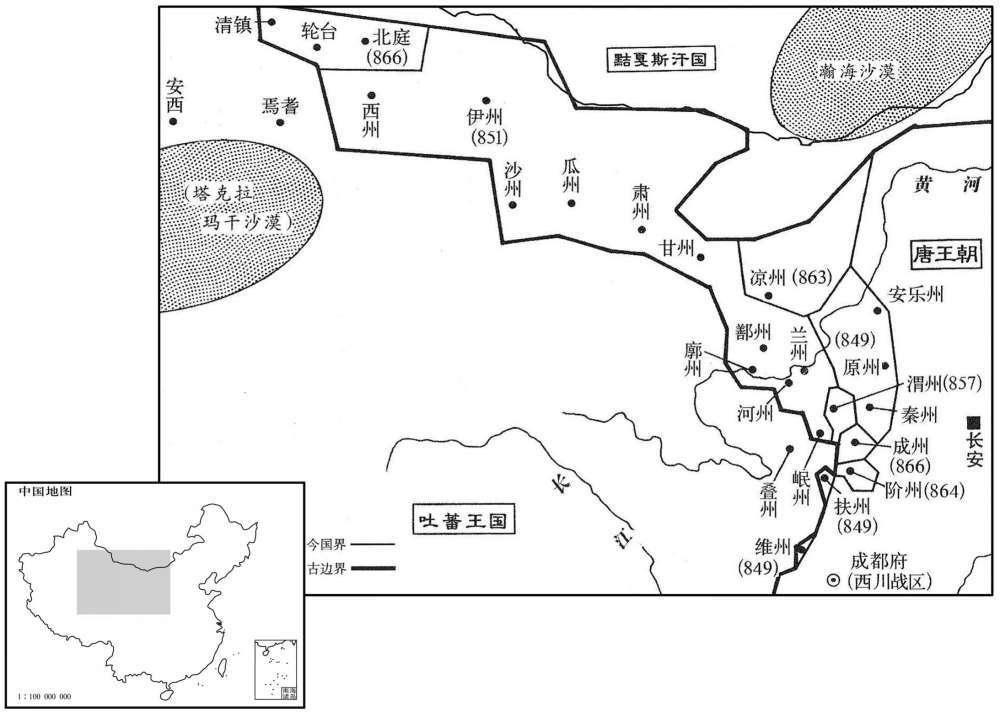
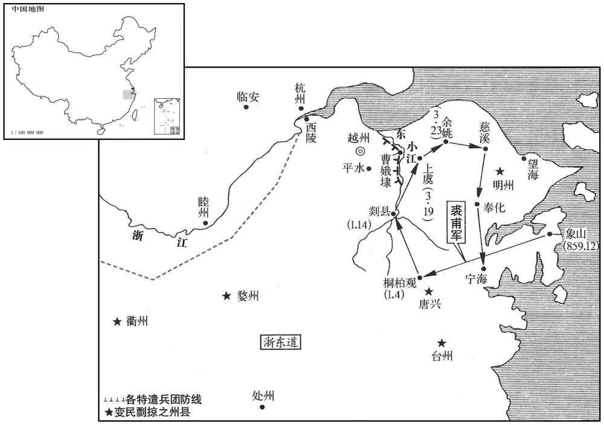

卷次与人物目录 / 卷249
资治通鉴 · 卷第二百四十九【唐纪六十五】
公元850年至公元859年 · 原文、白话与胡三省注
本页按胡注本编排保存全卷内容。白话采用本站所据译本，未可靠对应的内容另列说明；事件标题用于定位，并非原书文字。
本卷共152段原文，147段有译文对应，5段缺译或待核对。
卷第二百四十九【唐纪六十五】起上章敦牂（庚午），尽屠维单阏（己卯），凡十年。
卷首原文与注释
宣宗元圣至明成武献文睿智章仁神聪懿道大孝皇帝下
公元850年 · 唐宣宗元圣至明成武献文睿智章仁神聪懿道大孝皇帝大中四年
大中四年〔（庚午、八五〇）〕
上传原文的注释括号有异常，字符原样保留；无法可靠划分的段落默认全文显示。
本年事件索引（现代整理）
春，正月，庚辰朔，赦天下。
春季，正月，庚辰朔（初一），唐宣宗宣告大赦天下。
二月，以秦州隶凤翔。〔秦州本属陇右节度，是时新复，以属凤翔。〕
二月，唐朝廷将秦州隶属于凤翔。
夏，四月，庚戌，以中书侍郎、同平章事马植为天平节度使。上之立也，左军中尉马元贽有力焉，〔武宗之大渐也，马元贽为左神策护军中尉，立上为皇太叔。〕由是恩遇冠诸宦者，〔冠，古玩翻。〕植与之叙宗姓。上赐元贽宝带，元贽以遗植，〔遗，唯季翻。〕植服之朝，〔朝，宜遥翻。〕上见而识之，植变色，不敢隐。明日，罢相，收植亲吏菙侔，下御史台鞫之，尽得植与元贽交通之状，〔下，户嫁翻。〕再贬常州刺史。〔常州，古延，古延陵季子之邑，后为毗陵，晋为晋陵，唐为常州，京师东南二千八百四十三里。
两版字句有差异，建议核对原文。
夏季，四月，庚戌 ，（初二），唐宣宗任命中书侍郎、同平章事马植为天平节度使。唐宣宗被立为皇帝，宦官左神策军中尉马元贽出了大力，于是唐宣宗对他的恩遇超过其他宦官。马植与马元贽攀亲，叙为马姓宗族，唐直宗赐给马元贽金宝腰带，马元贽转赠给马植，马植系上宝带上朝，被唐宣宗看见并认出，马植当即脸上变色，不敢隐瞒。第二天，唐宣宗罢马植宰相官位，收捕马植的亲信胥吏董侔，送交御史台加以审问，将马植与马元贽内外交通的情状全部查清，于是再贬马植为常州刺史。
六月，戊申，兵部侍郎、同平章事魏扶薨。以户部尚书、判度支崔龟从同平章事。
六月，戊申（初二），兵部侍郎、同平章事魏扶去世。唐宣宗任命户部尚书、判度支崔龟从为同平章事。
秋，八月，以白敏中判延资库。〔去年改备边库为延资库。〕
秋季，八月，唐宣宗任白敏中领掌延资库。
卢龙节度使周綝薨，军中表请以押牙兼马步都知兵马使张允伸为留后，九月，丁酉，从之。〔考异曰：四年七月，周綝薨，张允伸为留后。注曰：旧纪亦无朝廷命綝为节度使年月。至此但云「幽州节度使周綝卒，军人立张允伸为留后。」实录：「九月，幽州大将表请押衙张允伸知留后事。」旧允伸传曰：「大中四年，戎帅周綝寝疾，表允伸为留后。」朝廷可其奏。」今参取之。今按通鉴书八月周綝薨。考异以为七月。
本段缺少可靠对应白话，原文完整保留；未使用生成译文。
党项为边患，发诸道兵讨之，连年无功，戍馈不已；右补阙孔温裕上疏切谏，上怒，贬柳州司马。温裕，戣之兄子也。〔孔戣见二百四十卷宪宗元和十二年。〕
党项族成为唐朝的边境祸患，朝廷调发诸道兵攻讨，连年未获成功，而戌边的给养却输送不已；右补阙孔温裕向唐宣宗上疏进行谏阻，词语痛切，唐宣宗发怒，将孔温裕贬为柳州司马。孔温裕是孔哥哥的儿子。
吐蕃论恐热遣僧莽罗蔺真将兵于鸡项关南造桥，以击尚婢婢军于白土岭。〔水经注：左南津西六十里有白土城，城西北有白土川水。其地在唐河州凤林县西。以此推之，鸡项关亦在河州界。〕婢婢遗其将尚铎罗榻藏将兵据临蕃军以拒之，不利，复遣磨离罴子烛卢巩力〔复，扶又翻。〕将兵据牦牛峡以拒之。〔牦，力之翻。〕巩力请「按兵拒险，勿与战，以奇兵绝其粮道，使进不得战，退不得还，不过旬月，其众必溃。」罴子不从。巩子曰：「吾宁为不用之人，不为败军之将。」称疾，归鄯州。罴子逆战，败死。婢婢粮乏，留拓跋怀光守鄯州，帅部落三千余人就水草于甘州西。〔帅，读曰率。宋白曰：甘州，西南至肃州福禄县界赤柳涧三百三十里。肃州，南至吐蕃界四百里。〕恐热闻婢婢弃鄯州，自将轻骑五千追之，至瓜州，〔宋白曰：瓜州，东南至肃州界三百四十里。〕闻怀光守鄯州，遂大掠河西鄯、廓等八州，〔宋白曰；廓州，北至鄯州百八十里，东南至河州凤林县二百八十里。〕杀其丁壮，劓刖其羸老〔劓，鱼气翻。刖，鱼决翻。羸，伦为翻。〕及妇人，以槊贯婴儿为戏，焚其室庐，五千里间，赤地殆尽。
吐蕃酋领论恐热派遣僧人莽罗蔺真统兵于鸡项关以南造桥，用以攻击尚婢婢部，在白土岭屯驻军队。尚婢婢派遣其部将尚铎罗榻藏统兵据守临蕃军，以抗拒论恐热军，接战不利，尚婢婢又派遣磨离罴子、烛卢巩力统率军队据守牛峡以抗拒论恐热的进攻。烛卢巩力请求“按兵不动，据守险要，不与敌军接战，而出奇兵断绝敌军的粮道，使论恐热进不能作战，退又不得回还，不过几个月，敌军必然溃败。”磨离罴子不加理会。烛卢巩力说：“我宁愿成为不被任用的人，也不愿成为败军之将。”于是宣称有疾病，回到鄯州。磨离罴子率领军队与论恐热军逆战，大败而死。尚婢婢由于部众缺乏粮草，留下拓跋怀光据守鄯州，率领部落三千余人逐水草来到甘州西部地区。论恐热听说尚婢婢放弃鄯州，亲自统率轻骑五千人追赶，追至瓜州，听说拓跋怀光据守鄯州，于是命令部下在河西鄯州、廓州等八州地方大肆杀掠，将青壮年男子杀死，将老弱者以及妇女的鼻子和膝盖骨割去，用长矛刺婴儿作为游戏，焚烧居民的住房，使河西五千里之内，一片赤红。烧了个精光。
冬，十月，辛未，以翰林学士承旨、兵部侍郎今狐绹同平章事。〔考异曰：旧纪在十一月。实录、新纪。
两版字句有差异，建议核对原文。
冬季，十月，辛未（二十七日），唐宣宗任命翰林学士承旨、兵部侍郎令狐为同平章事。
十一月，壬寅，以翰林学士刘瑑为京西招讨党项行营宣慰使。〔瑑，持兖翻。〕
十一月，壬寅（二十八日），唐宣宗任命翰林学士刘为京西招讨党项行营宣慰使。
以卢龙留后张允伸为节度使。
唐宣宗任命卢龙留后旨允伸为节度使。
十二月，以凤翔节度使李业、河东节度使李拭并兼招党项使。
十二月，唐宣宗任命凤翔节度使李业、河东节度使李拭一并兼任招讨党项吏。
吏部侍郎孔温业白执政求外官，白敏中谓同列日：「我辈须自点检，孔吏部不肯居朝廷矣。」温业，戣之弟子也。〔孔温业之操行不见于史，时人盖以其家世而敬之。
两版字句有差异，建议核对原文。
吏部侍郎孔温业向执政宰相请求到地方上任外官，白敏中对同列宰相说：“我们这些当朝宰相应该检点一些，孔吏部不肯居于朝廷为官了。”孔温业是孔弟弟的儿子。
译本中未与胡注本可靠对应的内容
以下另列供核对版本差异，不并入胡注本正文。
译本所附古文
[6]卢龙节度使周薨，军中表请以押牙兼马步都知兵马使张允伸为留后，九月，丁酉，从之。
译本白话
卢龙节度使周去世，卢龙藩镇军中向朝廷上表请求任押牙兼马步都知兵马使张允伸为留后，九月，丁酉（二十三日），唐宣宗表示同意。
公元851年 · 唐宣宗元圣至明成武献文睿智章仁神聪懿道大孝皇帝大中五年
五年〔（辛未、八五一）〕
上传原文的注释括号有异常，字符原样保留；无法可靠划分的段落默认全文显示。
本年事件索引（现代整理）
春，正〔【章：十二行本「正」作「二」；乙十一行本同；退斋校同。】〕月，壬戌，天德军奏摄沙州刺史张义潮遣使来降。〔降，户江翻；下同。沙州，东南至长安三千八百五十九里。〕义潮，沙州人也，时吐蕃大乱，义潮阴结豪杰，谋自拔归唐；一旦，帅众被甲噪于州门，〔帅，读曰率。被，皮义翻。〕唐人皆应之，吐蕃守将惊走，义潮遂摄州事，奉表来降。〔考异曰：补国史作「议潮」。今从实录、新、旧纪、传。〕以义潮为沙州防御使。
春季，正月，壬戌（疑误），唐天德军向朝廷奏称代理沙州刺史张义潮派遣使者来归降。张义潮是沙州人，时值吐蕃内部发生大变乱，张义潮暗中连结沙州豪杰之士，谋划以自己的力量攻拔沙州，归降唐朝；一天早晨，张义潮率领部众全副武装在州门前喧噪鼓动，原属唐朝的汉族人全都响应，吐蕃族的守将惊慌失措逃走，于是张义潮摄领沙州军政事务，向唐朝上表归降。唐宣宗任命张义潮为沙州防御使。


本年形势与背景参考图
以兵部侍郎裴休为盐铁转运使。休，肃之子也。〔裴肃见二百三十五卷德宗贞元十二年。〕自太和以来，岁运江、淮米不过四十万斛，吏卒侵盗、沉没，舟达渭仓者什不三四，大堕刘晏之法，〔沉，持林翻。堕，读曰隳。刘晏法见二百二十六卷德宗建中元年。〕休穷究其弊，立漕法十条，岁运米至渭仓者百二十万斛。
唐宣宗任命兵部侍郎裴休为盐铁转运使。裴休是裴肃的儿子。自从唐文宗太和年间以来，每年漕运到京师的江、淮地区的大米不过四十万斛，由于路上遭受官吏和士卒的偷盗侵吞以及船沉没于河底，运米船到达谓仓的不到十分之三四，使刘晏创立的漕运之法遭到极大的破坏，裴休坚决追究漕运过程中的弊端，制定漕运法规十条，使每年通过漕运输送至渭仓的江、淮大米达到一百二十万斛。
上颇知党项之反由边帅利其羊马，数欺夺之，或妄诛杀，党项不胜愤怨，故反，〔帅，所类翻。数，所角翻。胜，音升。乃以右谏议大夫李福为夏绥节度使。自是继选儒臣以代边帅之贪暴者，行日复面加戒励，〔复，扶又翻。〕党项由是遂安。福，石之弟也。
唐宣宗很清楚党项族的反叛是由于唐边镇将帅贪图党项族的羊、马，经常欺侮党项人，夺取他们的羊、马，有的竟妄加诛杀，党项族人民不胜愤怒和怨恨，所以被迫造反。唐宣宗为此任命右谏议大夫李福为夏绥节度使。此后继续选任文臣来替代边镇贪暴的将帅，临行前唐宣宗还要当面告诫和勉励戌边的文臣，于是党项的叛乱得以安定。李福是李石的弟弟。
上以南山、平夏党项久未平，〔党项居庆州者，号东山部；居夏州者，号平夏部；其窜居南山者，为南山党项。赵珣聚米图经；党项部落在银、夏以北居川泽者，谓之平夏党项；在安、盐以南，居山谷者，谓之南山党项。考异曰：唐年补录曰：「松州南有雪山，故曰南山。平夏，川名也。」余按唐年补录，乃末学肤受者之为耳。今不欲复言地理，姑以通鉴义例言之。考异者，考群书之同异而审其是，训释其义，付之后学。南山之说，既无同异之可考，今而引之，疑非考异本指也。颇厌用兵。崔铉建议，宜遣大臣镇抚。三月，以白敏中为司空、同平章事，充招讨党项行营都统、制置等使，〔职源曰：制置使始此。〕南北两路供军使兼邠宁节度使。敏中请用裴度故事，择廷臣为将佐，许之。〔裴度故事见二百四十卷宪宗元和十二年。〕夏，四月，以左谏议大夫孙景商为左庶子，充邠宁行军司马；知制诰蒋伸为右庶子，充节度副使。伸，系之弟也。〔蒋系见二百四十四卷文宗太和五年。〕
两版字句有差异，建议核对原文。
南山、平夏党项部族的叛乱许久不能平息，唐宣宗不愿动用军队进行征讨。崔铉建议，应该派遣朝中大臣去进行镇压招抚，方能有成效。三月，唐宣宗任命白敏中为司空、同平章事，充任招讨党项行营都统、制置等使，南北两路供军使兼宁节度使。白敏中请求依照裴度过去的做法，选择朝廷的大臣为部下将佐，唐宣宗表示同意。夏季，四月，唐宣宗任命左谏议大夫孙景商为左庶子，充任宁行军司马；又任命知制诰蒋伸为右庶子，充任宁节度副使。蒋伸是蒋系的弟弟。
初，上令白敏中为万寿公主选佳伲，〔为，于伪翻。〕敏中荐邺颢；时颢已婚卢氏，行至郑州，堂帖追还，〔万寿公主适郑颢见上卷上年。郑州去京师一千一百五里。〕颢甚衔之，由是数毁敏中于上。敏中将赴镇，言于上曰：「郑颢不乐尚主，〔数，所角翻。乐，音洛。〕怨臣入骨髓。臣在政府，无如臣何；今臣出外，颢必中伤，臣死无日矣！」〔中竹仲翻。〕上曰：「上曰：「朕知之久矣，卿何言之晚邪！」命左右于禁中取小柽函以授敏中曰：「此皆郑郎谮卿之书也。朕若信之，岂任卿以至今日，」敏中归，置柽函于佛前，焚香事之。〔柽，丑贞翻；说文曰：河柳也。〕
起初，唐宣宗命令白敏中为女儿万寿公主选择佳婿，白敏中选中并推荐郑颢；当时郑颢已经与卢氏女订婚，走到郑州时，被宰相府的堂贴追回，为此郑颢对白敏中很不满意，经常在唐宣宗面前诋毁白敏中。白敏中将赶赴边镇，对唐宣言说：“郑颢不愿意娶公主，对我怨恨入于骨髓。我在政事堂掌政，他不能对我有什么奈何；今我要出朝，郑颢必定趁机恶语中伤，我恐怕死期不远了！”唐宣宗说：“朕早就知道了，您为什么这么晚才提醒我！”于是命左、右近侍从宫禁中取出一个红柳木盒子，交给白敏中说：“这里面都是郑郎谮毁您的书信，朕如果相信，哪里能重用您到今天呢！”白敏中回到家中，将红柳木盒子放到佛象前，烧香下拜，供若神明。
敏中军于宁州，壬子，定远城使史元破党项九千余帐于三交谷，〔三交谷在夏州界。〕敏中奏党项平。辛未，诏：「平夏党项，已就安帖。〔平夏，地名，在夏州界。宋朝李继迁之叛也，徙绥州吏民之半置平夏以为巢穴，盖银、夏之要地也。南山党项，闻出山者迫于饥寒，犹行钞掠，〔钞，楚交翻。〕平夏不容，穷无所归；宜委李福存谕，于银、夏境内授以闲田。如能革心向化，则抚如赤子，从前为恶，一切不问，或有抑屈，听于本镇投牒自诉。若再犯疆埸，或复入山林，〔复，扶又翻；下同。〕不受教令，则诛讨无赦。将吏有功者甄奖，〔甄，稽延翻。〕死伤者优恤，灵、夏、邠、鄜四道百姓，给复三年，邻道量免租税。〔鄜，音肤。复，方目翻。量，音良。〕向由边将贪鄙，致其怨叛，自今当更择廉良抚之。若复致侵叛，当先罪边将，后讨寇虏。」
白敏中驻军于宁州，壬子（十日），定远城使史元于三交谷击破党项族九千余帐，白敏中奏告朝廷称党项已平定。辛未（二十九日），唐宣宗颁下诏令：“平夏党项部族现在已经安定帖服了，听说南山党项部族有些出山的帐落，由于饥寒交迫，仍然在进行抢掠，而为平夏党项部所不容，穷困得无路可走，没有归处；应该请李福向南山党项部存抚告谕，在银州、夏州境内授给他们一些闲置的田地。如果他们能洗心革面，听从教化，而不再剽掠，就应该象赤子一样抚慰他们；从前他们作恶多端，现在一切不加追究，如果有的帐落有冤屈，可让他们自己随时到所在军镇向主管官吏投牒中诉。如果再敢侵犯我边疆牧场，或者重新逃入山林之中，不受我大唐王朝的教令，就对他们进行诛讨，决不赦免。我边镇将领有功劳的人在经过甄别后给予奖赏，战死、受伤的人给予优厚的抚恤，凡是灵州、夏州、州、州四道的百姓，给予免征赋税三年的优待，相邻的道根据具体情况适当地减一些租税。过去由于边镇将帅贪暴卑鄙，致使党项族怨愤而叛乱，自今以后应当更慎重地选择廉洁、品行优良的将吏来安抚党项部族。如果党项族再侵扰边疆发动叛乱，应当先问边镇将吏的罪，然后再征讨叛乱的族人。”
吐蕃论恐热残虐，所部多叛；拓跋怀光使人说诱之，〔说，式芮翻。诱，以久翻，导引也。〕其众或散居〔【章：十二行本「居」作「归」；乙十一行本同；孔本同；张校同。】〕部落，或降于怀光。恐热势孤，乃扬言于众曰：「吾今入朝于唐，借兵五十万来诛不服者，然后以渭州为国城，请唐册我为赞普，谁敢不从！」五月，恐热入朝，上遣左丞李景让就礼宾院问所欲。恐热气色骄倨，语言荒诞，〔诞，徒旱翻，夸大也。〕求为河渭节度使；上不许，召对三殿，如常日胡客，劳赐遣还。〔劳，力到翻。，还，从宣翻。〕恐热怏怏而去，复归落门川，聚其旧众，〔恐热本蕃落门讨击使。〕欲为边患。会久雨，乏食，众稍散，纔有三百余人，奔于廓州。
吐蕃酋领论恐热残忍暴虐，所率部众大多叛亡；拓跋怀光派人去游说引诱其部众，使论恐热的部众或者从部落中从散居出去，或者投降拓跋怀光。论恐热的势力越来越孤单，于是向其部众扬言说：“我今天要朝拜大唐，向唐朝借兵五十万人来诛讨不服从我的人，然后将渭州当作国都，请大唐皇帝册封我为吐蕃赞普，谁敢不服从我！”五月，论恐热来到长安朝见大唐皇帝，唐宣宗派遣左丞李景让到礼宾院问论恐热有什么要求。论恐热趾高气扬，骄横傲慢，出言不逊，语句荒诞，请求唐宣宗任命他为河渭节度使；唐宣宗没有允许，将论恐热召到三殿问对，就象对待一般的胡人宾客，稍事慰劳，赐给一些东西后即让他回去。论恐热没有达到目的，怏怏不乐而去，回到落门川，聚集他原先的部众，企图作乱，成为唐朝的边患。正遇上久雨时节，缺乏粮食，其部众逐渐散去，仅剩下三百余人，投奔廓州。
六月，立皇子润为鄂王。
六月，唐宣宗立皇子李润为鄂王。
进士孙樵上言：「百姓男耕女织，不自温饱，而群僧安坐华屋，美女精馔，〔馔，雏晥翻，又雏恋翻。〕率以十户不能养一僧。武宗愤其然，〔愤其然，犹言愤其如此也。〕发十七万僧，〔言使僧长发复为齐民也。〕是天下一百七十万户始得苏息也。陛下即位以来，修复废寺，天下斧斤之声至今不绝，度僧几复其旧矣。〔几，居依翻。〕阶下纵纵不能武宗除积弊，柰何兴之于已废乎！日者陛下欲修国东门，谏官上言，遽为罢役。〔为，于伪翻。〕今所复之寺，岂若东门之急乎﹖所役之功，岂若东门之劳乎﹖愿早降明诏，僧未复者勿复，寺未修者勿修，庶几百姓犹得以息肩也。」秋七月，中书门下奏：「陛下崇奉释氏，群下莫不奔走，恐财力有所不逮，因之生事扰人，望委所在长吏量加撙节。〔撙，慈损翻。〕所度僧亦委选择有行业者，〔行，下孟翻。〕若容凶粗之人，则更非敬道也。乡村佛舍，请罢兵日修。」〔时用兵以复河、湟〕。从之。
进士孙樵向唐宣宗上言：“老晨姓男耕女织，辛勤劳动却不能使自己获得温饱，而一大群不劳而获的佛教僧侣却安然自得地坐在华丽的房间里，身穿华美的衣裳，吃精美的饭菜，大概十户农家也养不起一个僧侣。武宗对僧侣不劳而食，蠹耗国家感到愤慨，勒令十七万僧侣蓄发还俗，使得天下一百七十万农户得以喘息复苏，而陛下即位以来，即下令修复被废的佛教诗庙，以致到今天天下修复庙宇的斧头刀锯之声仍不绝于耳，重新剃度的僧尼几乎恢复到以前的数目。您即使不能象武宗那样革除僧侣蠹国的积弊，又为什么要使已废除的积弊重新复兴呢！近日您想修缮长安城东门，谏官上言劝阻，您立即就罢除这项工役。而目前所恢复的寺庙，岂能比修复东门更加急迫？所花费的工役，岂能比修缮东门更少？希望您尽早降下圣明的诏书，命令凡僧尼还没有恢复身份的不准再予恢复，寺庙还未修复的也不准再作，或许劳苦的百姓为此仍然可以获得喘息的机会。”秋季，七月，中书门下奏称：“陛下您崇奉佛教，使下面的人莫不为之奔走，恐怕国家的财力无法承受，且因为推奉佛教而引发事端，骚扰人民，希望陛下能命令掌管佛事的有关官吏，对修建寺庙的费用适当地加以节约。对所剃度的僧侣也让有关部门加以选择，让有道行通佛性的人出家，如果容纳凶残粗野的人入佛门，当然就不是敬奉佛法了。乡村间的小佛舍，请等到收复河、湟罢兵后再修。”唐宣宗表示同意。
八月，白敏中奏南山党项亦请降。时用兵岁久，国用颇乏，诏并赦南山党项，使之安业。
八月、白敏中奏告朝廷称南山党项请求投降唐朝。当时用兵的时间已经很久，国家各项用度的费用相当困乏，唐宣宗颁下诏书，命令对南山党项部族一并赦免，使他们能安居乐业。
冬，十月，乙卯，中书门下奏：「今边事已息，而州府诸寺尚未毕功，望且令成之。其大县远于州府者，听置一寺，其乡村毋得更置佛舍。」从之。
冬季，十月，乙卯（十七日），中书门下政事堂向唐宣宗上奏：“如今边境上的事已经平息，而地方州府所要修复的诸寺庙还没有完工，希望这时下令让州府完成此项工程。如果大县离州府较远者，可以建置一座寺庙，而乡村就不得再建置佛舍了。”唐宣宗表示同意。
戊辰，以户部侍郎魏劚同平章事，仍判户部，时上春秋已高，未立太子，群臣莫敢言。劚入谢，因言：「今海内无事，惟未建储副，使正人辅导，臣窃以为忧。」且泣。时人重之。〔重之者，以其能言人所不敢言也。〕
戊辰（三十日），唐宣宗任命户部侍郎魏为同平章事，仍然负责户部事务。当时唐宣宗年事已高，还未立皇太子，群臣没有谁敢提这件事。魏入朝向宣宗谢恩，趁机上言：“现在海内已经无事，只是至今还没有建立储君，使正人君子加以辅导，我心里对此深感忧虑。”说着就流下眼泪。当时人对魏敢说别人不敢说的话而特别敬重。
蓬、果群盗依阻鸡山，寇掠三川；〔鸡山在蓬、果二州之界，而群盗依阻以寇掠三川，则其结根也广矣。三川，谓东、西川及山南西道也。〕以果州剌史王贽弘充三川行营都知马使以讨之。
逢州、果州的群盗以鸡山为根据地，侵扰掠夺东川、西川、山南西道等三川地区；唐宣宗任命果州刺史王贽弘充当三川行营都知兵马使进行讨伐。
制以党项既平，罢白敏中都统，但以司空，平章充邠宁节度使。
唐宣宗颁下制书，以党项的叛乱既已平定，罢除白敏中的招讨党项行营都统的职务，只以司空、平章事的名义充任宁节度使。
张义潮发兵略定其旁瓜、伊、西、甘、肃、兰、鄯、河、岷、廓十州，遣其兄义泽奉十一州图籍入见，〔十州并沙州为十一州。见，贤遍翻。宋白曰：瓜州，西至沙州二百八十里，西北至伊九百里。西州，东至伊州七百五十里。甘州，西至肃州四百二十里。肃州，南至瓜州五百二十六里。兰州，西至鄯州四百九十里。鄯州，西至廓州二百八十里。河州，东北至兰州三百里。岷州，北至兰州狄道县五百三十四里，西北至河州大夏县三百六十三里。〕于是河、湟之地尽入于唐。十一月，置归义军于沙州，以义潮为节度使、〔考异曰：唐年补录、旧纪、义潮降在五年八月。献祖纪年录及新纪在十月。按实录：「五年，二月，壬戌，天德军奏沙州刺史张义潮、安景旻及部落使阎英达等差使上表，请以沙州降。十月，义潮遣弟义泽以本道瓜、沙、伊、肃等十一州地图户籍来献。河、陇陷没百余年，至是悉复故地。十一月，建沙州为归义军，以张义潮为节度使，河、沙等十一州观察、营田、处置等使。」新纪：「五年，十月，沙州人张义潮以瓜、沙、伊、肃、鄯、甘、河、西、兰、岷、廓十一州归于有司。」新传：「三州、七关降之明年，沙州首领张义潮奉十一州地图以献，擢义潮沙州防御使，俄号归义军，遂为节度使。」参考诸书，盖二月义潮使者始以得沙州来告，除防御使，十月又遣义泽以十一州图籍来上，除节度使也。今从实录。新传云三州降之明年，误也。〕十一州观察使；又以义潮判官曹义金为归义军长史。〔按新书百官志：节度使有行军司马、节度副使、判官、支使等；其兼都督、都护，则有长史。
两版字句有差异，建议核对原文。
张义潮调发军队大致平定沙州近旁的瓜、伊、西、甘、肃、兰、鄯、河、岷、廓十州之地，派遣他的兄长张义泽奉十一州地图名籍入朝见唐宣宗，于是河、湟之地全部归入唐朝版图。十一月，唐宣宗置归义军于沙州，任命张义潮为归义军节度使、十一州观察使；又任命张义潮的判官曹义金为归义军长史。
以中书侍郎、同平章事崔龟从同平章事，充宣武节度使。
唐宣宗任命中书侍郎、同平章事崔龟从为同平章事衔，充任宣武节度使。
右羽林统军张直方坐出猎累日不还宿卫，贬左骁卫将军。
右羽林统军张直方因为外出游猎，数日不回来宿卫宫城，玩忽职守，被贬为左骁卫将军。
公元852年 · 唐宣宗元圣至明成武献文睿智章仁神聪懿道大孝皇帝大中六年
六年〔（壬申、八五二）〕
上传原文的注释括号有异常，字符原样保留；无法可靠划分的段落默认全文显示。
本年事件索引（现代整理）
春，二月，王贽弘讨鸡贼，平之。
春季，二月，王贽弘讨伐鸡山盗贼，将贼寇平定。
是时，山南西道节度使封敖奏巴南妖贼言辞悖慢，上怒甚。〔妖，于骄翻。悖，蒲妹翻。又蒲没翻。〕崔铉曰：「此皆陛下赤子，迫于饥寒，盗弄陛下兵于溪谷间，不足辱大军，但遣一使者可平矣。」乃遣京兆少尹刘潼诣果州招谕之。潼上言请不发兵攻讨，且曰：「今以日月之明烛愚迷之众，使之稽颡归命，其势甚易。〔稽，音启。易，以豉翻。〕所虑者，武臣耻不战之功，议者责欲速之效耳。」潼至山中，盗弯弓待之，潼屏左右直前〔屏，必郢翻，又卑正翻。〕曰：「我面受诏赦汝罪，使汝复为平人。闻汝木弓射二百步，今我去汝十步，汝真欲反者，可射我！」〔射，而亦翻。〕贼皆投弓列拜，请降。〔降，户江翻。〕潼归馆，而王贽弘与中使似先义逸引兵已至山下，竟击灭之。
这时，山南西道节度使封敖向唐宣宗上奏，称巴南的妖贼出言不逊，言辞傲慢，唐宣宗怒气冲天。崔铉说：“这些人都是陛下的赤子，由于饥寒交迫，于谷之间抢夺并戏弄您的军队，其实并不足以辱没您强大的军队，只要派遣一个使者就可以平定他们。”于是派遣京兆少尹刘潼到果州去招抚劝谕。刘潼向唐宣宗上言，请求不要调发军队去攻讨，并且说：“今天我用太阳和月亮的光明去照亮那群愚昧迷惑之众的心，让他们向您叩头归命，做到这一点十分容易。所忧虑的是，武臣们对不战之功感到耻辱，议论者追求速成的功效。”刘潼来到山中，贼盗弯着弓接待他，刘潼屏去左右随从独自走上前说：“我已经面受皇帝的诏敕，赦免你们的罪，使你们重新做平民百姓。听说你们的木弓能射二百步，现在我距你们只有十步，你们如果真想造反，可以射死我！”贼众全都将弓箭抛在一边，排成列队向刘潼拜谢，请求投降。刘潼回到馆舍，王贽弘与宦官使者似先义逸率领军队已来到山下，竟然袭击已投降的人，将他们消灭。
三月，敕先赐右卫大将军郑光鄠县及云阳庄并免税役。中书门下奏，以为：「税役之法，天下皆同。陛下屡发德音，欲使中外画一，〔汉书：萧何为法，讲若画一。师古注曰：画一，言整齐也。今独免郑光，似稍乖前意。事虽至细，系体则多。」敕曰：「朕以郑光元舅之尊贵，欲优异令免征税，初不细思。况亲戚之间，人所难议，卿等苟非爱我，岂进嘉言！庶事能尽如斯，天下何忧不理！有始有卒，〔卒，子恤翻。当共守之。并依所奏。」
三月，唐宣宗下敕令原先赐给右卫大将军郑光县以及云阳的庄园一并免除税役。为此中书门下上奏，认为：“收取税役的法规，天下都应相同。您屡次发布德音，希望使中外法令齐整划一，今天唯独先除郑光的税役，似乎与前面的意思稍有悖离。虽然这是一件很细微的事，但牵涉的问题却很多。”唐宣宗为此下敕宣称：“朕以为郑光皇帝元舅的尊贵身份，企图给他优异的待遇，免征租税，起初没有细加思考。况且亲戚之间，正是人们难以议论的，你们如果不是热爱我，岂能向我进如此好的意见！其他一般性事务如果都能这样，天下何忧不能治理！有始有终，君臣应当共同遵守。按照你们所奏请的去办。”
本段人物：萧何
夏，四月，甲辰，以邠宁节度使白敏中为西川节度使。
夏季，四月，甲辰（初八），唐宣宗任命宁节度使白敏中为西川节度使。
湖南奏，团练副使冯少端讨衡州贼帅邓裴，平之。〔帅，所类翻；下同。〕
湖南奏告朝廷，团练副使冯少端讨伐衡州贼帅邓裴，将他们讨平。
党项复扰边，上欲择可为邠宁帅者而难其人，从容与翰林学士、中书舍人须昌毕諴论边事，諴援古据今，具陈方略。〔从，千容翻。諴，户琼翻。援，于元翻。〕上悦曰：「吾方择帅，不意颇、牧近在禁廷。卿其为朕行乎！」諴欣然奉命。上欲重其资履，〔为，于伪翻。资，以序进。履，所历之官也。〕六月，壬申，先以諴为刑部侍郎，癸酉，乃除邠宁节度使。〔考异曰：旧传懿宗召问边事。今从实录。〕
党项部族又侵扰边，唐宣宗想选择可充任宁统帅的人，而难以找到合适者，便从容地与翰林学士、中书舍人须昌人毕议论边境之事，毕援古据今，向唐宣宗陈述征讨党项的一整套方略。唐宣宗欢喜地说：“朕正要选择统帅，想不到廉颇、李牧就近在朕禁廷。您愿意为朕出征边镇吗？”毕欣然表示愿奏命前往。唐宣宗企图加重毕的官资履历，六月，壬申（疑误），先任命毕为刑部侍郎，癸酉（疑误），再任命毕为宁节度使。
雍王渼薨，追谥靖怀太子。〔渼，音美。〕
雍王李去世，被追谥为靖怀太子。
河东节度使李业纵吏侵掠杂虏，又妄杀降者，由是北边扰动。闰月，庚子，以太子少师卢钧为河东节度使。业内有所恃，人莫敢言，魏劚独请贬黜；上不许，但徙义成节度使。
河东节度使李业放纵所部吏民侵犯和掠夺杂居的各族胡人，又随意乱杀投降的胡人，于是北部边境出现动乱。闰七月，庚子（初六），唐宣宗任命太子少师卢钧为河东节度使。李业因为在宫内有所依侍，人们不敢说他的罪过，唯独魏暮请唐宣宗将李业贬黜罢官；唐宣宗没有允许，只是将李业徙为义成节度使。
卢钧奏度支郎中韦宙为副使。宙徧诣塞下，悉召酋长，谕以祸福，〔酋，慈由翻。长，知丈翻。〕禁唐民毋得入虏境侵掠，犯者必死，杂虏由是遂安。
卢钧向唐宣宗奏请度支郎中韦宙为河东节度副使。韦宙走遍塞下，将诸杂胡酋长全部召来，向他们告谕以祸福，又禁止唐朝民众，要他们不得进故胡人地境侵占掠夺，有犯者必处死，诸杂居胡人部落由此安定下来。
掌书记李璋杖一牙职，明日，牙将百余人诉于钧，钧杖其为首者，谪戍外镇，余皆罚之，曰：「边镇百余人，无故横诉，〔横，户孟翻。〕不可不抑。」璋，绛之子也。〔李绛相宪宗，以直谅闻；帅梁，为乱卒所杀。
两版字句有差异，建议核对原文。
掌书记李璋用棍杖打一名牙职小官，第二天，牙将一百余人来向卢钧申诉，卢钧用棍杖打其中为首者，将他贬谪于外镇戌守，其余的人都受到了处罚，卢钧说：“边镇一百余人，无故强横地申诉，不能不予抑制。”李璋是李绛的儿子。
八月，甲子，以礼部尚书裴休同章事。
八月，甲子（初一），唐宣宗任命礼部尚书裴休为同平章事。
獠寇昌、资二州。〔獠，鲁皓翻。资州，汉资中县地，宋、齐为资阳戍，西魏置资州，至京师三千五百六十里。
本段缺少可靠对应白话，原文完整保留；未使用生成译文。
冬，十月，邠宁节度使毕諴奏招谕党项皆降。
冬季，十月，节度使毕奏告唐宣宗，称招抚告谕党项叛乱部众，已使他们全部归降。
骁卫将军张直方坐以小过屡杀奴婢，贬恩州司户。
骁卫将军张直方多次以小过失杀死奴婢，被贬官徙任恩州司户。
十一月，立宪宗子惴为棣王。〔惴，之捶翻。〕
十一月，唐宣宗立唐宪宗的儿子李惴为棣王。
十二月，中书门下奏：「度僧不精，则戒法堕坏；〔堕，读曰隳。〕造寺无节，则损费过多。请自今诸州准元敕许置寺外，有胜地灵迹许修复，繁会之县许置一院。〔繁会，谓人物浩繁，舟车所会之地。〕严禁私度僧、尼；若官度僧、尼有阙，则择人补之，仍申祠部给牒。〔止今所谓度牒者。〕其欲远游寻师者，须有本州岛公验。」从之。〔公验者，自本州岛给公文，所至以为照验。〕
十二月，中书门下上奏：“剃度僧尼不精，就会使佛教的戒法堕坏；建造寺庙没有节制，就会耗损费用过多。请求自今以后，诸州在原先所颁布的诏敕所允许设置的寺庙之外，在有名胜灵迹的地方许予修复寺庙，人烟车马繁盛的县准许设置一所寺院。严禁私自剃度僧侣、尼姑；如果官府剃度僧侣、尼姑有缺额，可以选择合格的人补上，但仍要申报祠部发给度牒。远游寻找师傅的僧侣，必须有本州颁发的公文，以便到达目的地时，由当地官府对照验正。”唐宣表示同意。
译本中未与胡注本可靠对应的内容
以下另列供核对版本差异，不并入胡注本正文。
译本所附古文
[9]獠寇昌、资二州。
译本白话
獠族人侵掠昌州、资州之地。
公元853年 · 唐宣宗元圣至明成武献文睿智章仁神聪懿道大孝皇帝大中七年
七年〔（癸酉、八五三）〕
春，正月，戊申，上祀圜丘；赦天下。
春季，正月，戊申（十七日），唐宣宗举行祀圜丘典礼，大赦天下。
夏，四月，丙寅，敕：「自今法司处罪，〔处，昌吕翻。〕用常行杖。杖脊一，折法杖十；〔法杖，谓常行臀杖也。脊，资昔翻。折，之截翻。〕杖臀一，折笞五。〔臀，徒浑翻。〕使吏用法有常准。」
夏季，四月，丙寅（初六），唐宣宗颁布诏敕：“自今以后司法衙门处以刑罚，用经常行用的杖刑。用棍仗打脊背一下，依法规折算为用棍杖打臀部十下；用棍杖打臀部一下，折算为用鞭挞五下。这样可以使官吏用刑有一定的标准。”
冬，十二月，左补阙赵璘请罢来年元会，止御宣政。上以问宰相，对曰：「元会大礼，不可罢。况天下无事。」上曰：「近华州奏朿贼光火劫下邽，〔明火行劫，言盗无所惮。华，户化翻。〕关中少雪，〔少，诗沼翻。〕皆朕之忧，何谓无事！虽宣政亦不可御也。」
冬季，十二月，左补阙赵请求罢除明年元旦大朝会典礼，让唐宣宗只到宣政殿见朝臣。唐宣宗就此问于宰相，宰相们回答说：“元旦朝会大礼，不可以罢废。况且现在天下无事。”唐宣宗说：“最近华州奏称有盗贼无所忌惮，在光天化日之下抢劫下城，关中地区下雪太少，这都是朕的忧虑，怎么能说无事！即使是让我到宣政殿举行典礼，也是不可以的。”
上事郑太后甚谨，不居别宫，朝夕奉养。〔养，余亮翻。〕舅郑光历平卢、河中节度使，上〔【章：十二行本「上」上有「入朝」二字；乙十一行本同；孔本同；张校同；退斋校同。】〕与之论为政，光应对鄙浅，上不悦，留为右羽林统军，使奉朝请。太后数言其贫，〔数，所角翻。〕上辄厚赐帛，终不复任以民官。〔复，扶又翻。民官，谓治民之官。〕
唐宣宗服侍郑太后甚为谨慎，不让她居住于别宫，以便自己能朝夕奉养。舅舅郑光历官平卢节度使和河中节度使，唐宣宗与他议论为政之道，郑光应对时表现得鄙陋浅薄，唐宣宗很不高兴，留郑光于朝廷任佑羽林统军，使他便于奉朝请示。郑太后几次向唐宣宗说郑光贫穷，唐宣宗即厚厚地赐给郑光金帛，而始终不再委任他以为治民之官。
度支奏：「自河、湟平，每岁天下所纳钱九百二十五万余缗，内五百五十万余缗租税，八十二万余缗榷酤，二百七十八万余缗盐利。」〔榷，古岳翻。酤，工护翻。考异曰：续皇王宝运录具载是岁度支支收之数，舛错不可晓，今特存其可晓者。温公拳拳于史之阙文，盖其所重者，制国用也。〕
度支奏告唐宣宗：“自河、湟地区得到平定，每年天下所收纳的钱有九百二十五万余缗，其中五百五十万余缗是租税，八十二万余缗是专卖酒的税钱，二百七十八万余缗是盐利。”
公元854年 · 唐宣宗元圣至明成武献文睿智章仁神聪懿道大孝皇帝大中八年
八年〔（甲戌、八五四）〕
上传原文的注释括号有异常，字符原样保留；无法可靠划分的段落默认全文显示。
本年事件索引（现代整理）
春，正月，丙戌朔，日有食之。罢元会。
春季，正月，丙戌朔（初一），出现日食，罢除元旦大朝会。
上自即位以来，治弒宪宗之党，宦官、外戚乃至东宫官属，诛窜甚众。〔宣宗绝郭后景陵之合葬，诛元和东宫之官属，则以为穆宗母子诚预陈弘志之谋者。然文宗于穆宗，父子也。文宗愤元和逆党，欲尽诛之而不克，以成甘露之祸。使父果为商臣，则子必为潘崇讳矣。〕虑人情不安，丙申，诏：「长庆之初，乱臣贼子，顷搜擿余党，流窜已尽，〔温公于郭后之崩，王皞之贬，既详书之矣；复书此诏。然王皞之议，卒伸于咸通之初，通鉴又书之。懿宗以子继父，而天理所在者公议所者公议所在，不可得而违也，不可得而揜也。读通鉴者宜以是观之。〕其余族从疏远者，一切不问。」〔从，一从、再从、三从兄之亲。族，袒免以外之亲也。从，才用翻。〕
唐宣宗自从即皇帝位以来，整治弑唐宪宗的逆党，宦官、外戚以至东宫的官属，很多人受牵连，被诛杀的和被流放的人很多。由于怕造成人心不安，丙申（十一日），唐宣宗颁布诏书宣称：“长庆初年的乱臣贼郭，前一段时间搜捕其余党，已经全部依罪流放，其余与罪犯较疏远的亲族，一概不予追究。”
二月，中书门下奏，拾遗、补阙缺员，请更增补。上曰：「谏官要在举职，不必人多，如张道符、牛丛、赵璘辈数人，使朕日闻所不闻足矣。」丛，僧孺之子也。〔李德裕排牛僧孺；上恶德裕；故亲僧孺之子。〕
二月，中书门下政事堂奏告唐宣宗，称拾遗、补阙官员缺额，请求再增补一些。唐宣宗说：“谏官关键在于能称职，不必要人很多，如张道符、牛丛、赵这样几个人，使朕每天能知道许多朕所无法知道的事，这样就足够了。”牛丛是牛僧孺的儿子。
久之，丛自司勋员外郎出为睦州刺史，〔睦州，吴置新都郡，隋置睦州，取俗阜人和、内外辑睦为义，京师东南三千六百五十九里。〕入谢，上赐之紫。丛既谢，前言日：〔谢恩之后，前进而言。〕「臣所服绯，刺史所借也。」上遽曰：「且赐绯。」上重惜服章，有司常其绯、紫衣数袭从行，以备赏赐，或半岁不用其一，故当时以绯、紫为荣。上重翰林学士，至于迁官，必校岁月，以为不可以官爵私近臣也。
一段时间之后，牛丛自司勋员外郎出任睦州刺史，入朝向唐宣宗谢恩，唐宣宗赐给他紫衣。牛丛谢恩之后，走上前进言说：“我现在穿的绯衣，是刺史的凭借。”唐宣宗立即说：“那就再赐给您一件绯衣吧。”唐宣宗重视和珍惜代表官吏身份和地位的官服，有关部门经常预备绯衣、紫衣好几套跟从着唐宣宗，以备随时赏赐给官吏，但有时半年也不用其中一件，所以当时人均以穿绯衣、紫衣为荣耀。唐宣宗信重翰林学士，但翰林学士升迁官位时，唐宣宗必定要查对他们任官的年月，看是否任期届满，有足够的资历升迁新位，认为不可以随意将官爵私下赏赐给近密的臣下。
秋，九月，丙戌，以右散骑常侍高少逸为陜虢观察使。有敕使过硖石，〔硖石，隋之崤县，贞观十四年移治硖石坞，改名硖石，属陜州。陜，失冉翻。〕怒饼黑，鞭驿吏见血；少逸封其饼以进。敕使还，〔还，音旋，又如字。〕上责曰：「深山中如此食岂易得！」〔易，以豉翻。〕㻙配恭陵。
秋季，九月，丙戌（初四），唐宣宗任命右散骑常侍高少逸为陕虢观察使。有一位宦官敕使路过硖石县，对驿馆供给他食用的饼太黑感到愤怒，用鞭抽打驿吏，使驿使流血；高少逸将那块饼封于盒送交朝廷，当这位宦官敕使还朝时，唐宣宗斥责他说：“在深山中这样的食物，又岂能是容易得到的！”即将他降职发配去守恭陵。
立皇子洽为怀王，汭为昭王，汶为康王。〔汶，音问。考异曰：唐年补录：「五年，正月，甲戌朔，封三王。」今从实录、新纪。〕
唐宣宗立皇子李洽为怀王，李为昭王，李汶为康王。
上猎于苑北，〔此又出苑城而北猎。〕遇樵夫，问其县，曰：「泾阳人也。」「今为谁﹖」曰：「李行言。」「为政何如﹖」曰：「性执。有强盗数人，军家索之，〔军家，谓北司诸军也。唐人谓诸道节度及观察为使家，诸州为州家，诸县为县家。索，山客翻。〕竟不与，尽杀之。」上归，帖其名于寝殿之柱。冬，十月，行言除海州刺史，入谢，上赐之金紫。问曰：「卿知所以衣紫乎﹖」〔衣，于既翻；下至衣紫、衣黄并同。〕对曰：「不知。」上命取殿柱之帖示之。
唐宣宗出苑城之北游猎，遇到一位樵夫，问他是哪个县的人，椎夫回答：“泾阳县人。”又问：“县令是谁？”回答说：“李行言。”唐宣宗再问：“李行言在县为政情况怎么样？”樵夫回答说：“李行言性格固执。有几个强盗关押在县监狱，宦官领掌的北司禁军来县府要人，李行言就是不放人，硬是将这几个强盗全部处死了。”唐宣宗回宫后，将李行言的名字行事写在一个帖子上，挂于自己寝殿中的柱子上。冬季，十月，李行言被任命为海州刺史，入朝向唐宣宗谢恩时，唐宣宗赐给他金紫衣裳。并问李行言说：“你知道为什么赐给你紫衣吗？”李行言回答说：“不知道。”唐宣宗即命左右取来挂于寝殿柱子上的帖文，给李行言看。
上以甘露之变，〔见二百四十五卷文宗大和八年。〕惟李训、郑注当死，自余王涯、贾餗等无罪，诏皆雪其冤。
唐宣宗认为甘露之变，唯有李训、郑注应当处死，其余王涯、贾等人无罪，颁布诏书昭雪他们的冤枉。
上召翰林学士韦澳，托以论诗，屏左右与之语曰：「近日外间谓内侍权势何如﹖」对曰：「陛下威断，非前朝之比。」〔澳，音奥。屏，必郢翻，又卑正翻。断，丁乱翻。朝，直遥翻。〕上闭目摇首曰：「全未，全未！尚畏之在。〔句断。〕卿谓策将安出﹖」对曰：「若与外廷议之，恐有太和之变，不若就其中择有才识者与之谋。」上曰：「此乃末策。〔【章：十二行本「策」下有「朕已试之矣」五字；乙十一行本同；孔本同；张校同。】〕自衣黄、衣绿至衣绯，皆感恩，纔衣紫则相与为一矣！」唐自上元以后，三品已上服紫，四品服深绯，五品服浅绯，六品服深绿，七品服浅绿，八品服绿，九品深青，流外官及庶人服黄。太宗定制，内侍省不置三品官；内侍是长官，阶四官，其职但在合门守御，黄衣廪食而已。至玄宗，宦官至三品将军，门施棨戟，得衣紫矣。衣，于既翻。〕上又尝与令狐绹谋尽诛宦官，绹恐滥及无辜，密奏曰：「但有罪勿舍，有阙勿补，自然渐耗，至于尽矣。」宦者窃见其奏，由是益与朝士相恶，南北司如水火矣。
两版字句有差异，建议核对原文。
唐宣宗召来翰林学士韦澳，假借讨论诗文，屏去左右近侍对韦澳说：“近日禁宫外对内侍宦官的权势有哪些说法？”韦澳回答说：“都说陛下对宦官的处置威严果断，不是前朝皇帝可以相比的。”唐宣宗闭上眼睛摇摇头说：“都不是这么回事，都不是这么回事！朕对宦官还有畏惧呢。你看有什么良策能对付宦官呢？”韦澳回答说：“如果与宫廷之外的宰相大臣谋议诛除宦官，恐怕会有象太和年间那样的变故，还不如就在宦官当中选择一些有才识的人，与他们来谋议。”唐宣宗说：“这是末策，朕已试行过，当朕提拔他们，让他们穿上黄色衣裳、绿色衣裳，以至绯衣时，他们都感恩戴德，一旦赐给他们紫衣时，他们便与为首作恶的宦官抱成一团，不再听朕的话了！”唐宣宗又曾经与令狐密谋，企图将宦官全部诛杀干净，令狐恐怕会滥杀无辜，秘密地奏告唐宣宗说：“只要对有罪的宦官不予放过，宦官有缺不邓补充，就会自然而然地慢慢消耗，最后死光，用不着您的操劳忧虑了。”有宦官偷偷地看到了令狐的奏状，于是更加与外朝士大夫过不去，使南衙朝官与北司宦官势如水火。
公元855年 · 唐宣宗元圣至明成武献文睿智章仁神聪懿道大孝皇帝大中九年
九年〔（乙亥、八五五）〕
上传原文的注释括号有异常，字符原样保留；无法可靠划分的段落默认全文显示。
本年事件索引（现代整理）
春，正月，甲申，成德军奏节度使王元逵薨，军中立其子节度副使绍鼎，癸卯，以绍鼎为成德留后。
春季，正月，甲申（初四），唐成德军奏告朝廷称节度使王元逵去世，军中立王元逵的儿子节度副使王绍鼎主掌军政，癸卯（二十三日），唐宣宗任命王绍鼎为成德军留后。
二月，以醴泉令李君奭为怀州刺史。初，上校猎渭上，有父老以十数，聚于佛祠，上问之，对曰：「醴泉百姓也。县令李君奭有异政，考满当罢，诣府氙乞留，故此祈佛，冀谐所愿耳。」及怀州刺史阙，上手笔除君奭，宰相莫之测。君奭入谢，上以此奖厉，〔以得于父老之言奖厉。〕众始知之。
二月，唐宣宗任命醴泉县令李君为怀州刺史。起初，唐宣宗于渭上游猎，看见十几位父老聚集在一个佛祠前，唐宣宗上前讯问其缘故，父老们回答说：“我们是醴泉县百姓，县令李君有优异的政绩，任期届满当罢官，我们到官府乞求他留任，为此而祈祷于佛祠，希望都能如我们所愿。”后来怀州刺史空缺，唐宣宗亲手写诏敕任命李君，宰相们对李君的升迁摸不到头脑。李君入朝向唐宣宗谢恩，唐宣宗才以所得于父老之言来奖励李君，众人这才明白了李君超升的缘故。
三月，诏邠宁节度使毕諴还邠州。先是，以河、湟初附，党项未平，党项未平，移邠宁军于宁州，〔事见上卷三年。先，悉荐翻。〕至是，南山、平夏〔【章：十二本「夏」下有「党项」二字；乙十一行本同；孔本同；张校伺。】〕皆安，威、盐、武三州军食足，〔五年，以原州之萧关置武州。〕故令还理所。〔理所，犹言治所。邠宁军本理邠州，北至宁州一百二十五里。
两版字句有差异，建议核对原文。
三月，唐宣宗颁下诏书令宁节度使毕还治州。起先，由于河、湟地区刚归附朝廷，党项部族的叛乱还未平息，于是移宁军于宁州，到这时，南山党项和平夏党项部族都已安定下来，威州、盐州、武州三州的军粮充足，所以命令毕归还州洽所。
夏，闰四月，诏以「州县差役不均，自今每县据人贫富及役轻重作差科簿，送刺史检署讫，谫于令厅，〔谫，苏果翻。今厅，县令厅事也。〕每有役事委令据薄定〔【章：十二行本「定」作「轮」；乙十一行本同；孔本同；张校同。差。」〔今之差役薄始此。〕
夏季，闰四月，唐宣宗颁布诏令，认为：“州县对民户调发的差役不平均，自今以后每县官府根据人的贫富情况，以及差役的轻重制作差科簿，送交州刺史检查签署完毕后，再收藏于县令衙署存档，每有派役之事委交县令时，即依据差科簿来定当差的人。”
五月，丙寅，以王绍鼎为成德节度使。
五月，丙寅（十九日），唐宣宗任命王绍鼎为成德节度使。
上聪察强记，宫中厮役给洒扫者，厮，音斯。洒，所买翻，又所卖翻。扫，苏老翻，又素报翻。〕皆能识其姓名，识，职吏翻。〕才性所任，〔任，音壬。〕呼召使令，无差误者。天下奏狱吏卒姓名，一览皆记之。度支奏渍污帛，〔污，乌故翻。〕误书渍为清，枢密承旨孙隐中谓上不之见，辄足成之。〔唐末，枢密承旨以院吏充，五代以诸卫军充，宋朝以士人充，遂为清选，〕及中书覆入，〔内出度支奏付中书，中书宣署申覆，还而奏之，谓之覆入。〕上怒，推按擅改章奏者罚㻙之。
两版字句有差异，建议核对原文。
唐宣宗聪敏明察并且记忆力强，对宫禁中当差扫地身份低贱的厮役，也都能知道他们的姓名，并熟悉这些人的性格及特长，所以召呼他们干活，从不会叫错人，出现差误。天下各个地方官府奏告于朝廷的狱吏小卒的姓名，唐宣宗也一看便都记得。有一次度支给唐宣宗上的奏文中有渍污帛一句，渍字被误写为清字，枢密承指孙隐中以为唐宣宗不一定看到了这个错字，即将错字改正，然后送交中书门下，奏状经宰相府官员签署后再送入宫禁，唐宣宗发现奏状被改，大为愤怒，加以追究，将擅自修改章奏的人处罚降职。
上密令翰林学士韦澳纂次诸州境土风物及诸利害为一书，自写而上之，〔而上，时掌翻；下上疏同。〕虽子弟不知也，号曰处分语。他日，邓州刺史薛弘宗入谢，〔邓州，京师东南九百三十里。〕出，谓澳曰：「上处分本州岛事惊人。」澳询之，皆处分语中书也。〔处，昌吕翻。分，扶问翻。澳在翰林，上或遣中使宣旨草诏；事有不可者，澳辄曰：「兹事须降御札，方敢施行。」淹留至旦，上疏论之；上多从之。
唐宣宗密令翰林学士韦澳将各州境内的风俗名物以及各种利害关系次第编纂成为一本书，韦澳自己写完后即交给唐宣宗，就连自己的子弟也不知道这件事，书名为《处分语》。有一天，邓州刺史薛弘宗入宫向唐宣宗拜谢后出朝，对韦澳说：“皇上对邓州的事务了如指掌，处置和分析令人惊讶。”韦澳询问其中之事，都是《处分语》中所写的事。韦澳在翰林院，唐宣宗有时派宦官中使向韦澳传宣旨意，令他据以草写诏书；有些事韦澳认为处置不当，即对传旨的宦官说：“此事必须皇上亲笔写下字据，我才敢据以草诏。”于是拖延至第二天天亮，再上疏向唐宣宗论说；唐宣宗一般都能听从韦澳的意见。
秋，七月，浙东军乱，逐观察使李讷。讷，逊之弟子也，〔李逊见二百三十九卷宪宗元和十年。〕性卞急，〔杜预曰：下，躁疾也，音皮彦翻。〕遇将士不以礼，故乱作。
秋季，七月，浙东发生军乱，驱逐观察使李讷。李讷是李逊弟弟的儿子，性情急躁，对部下将士不以礼相待，因此引起军乱。
淮南饥，民多流亡，节度使杜悰荒于游宴，政事不治。上闻之，甲午，以门下侍郎、同平章事崔铉同平章事，充淮南节度使；丁酉，以悰为太子太傅、分司。
淮南发生饥荒，人民大多流亡他乡，节度使杜游宴过多，不理政事。唐宣宗得知了这些情况，甲午（十八日），任命门下侍郎、同平章事崔铉挂同平章事衔，充任淮南节度使；丁酉（二十一日），唐宣宗任杜为太子太傅、分司东都，为闲官。
九月，乙亥，贬李讷为朗州刺史，监军王宗景杖四十，配恭陵。仍诏「自今戎臣失律，并坐监军。」以礼部侍郎沉询为浙东观察使。询，传师之子也。〔传师者，沉既济之子。〕
九月，乙亥（二十九日），唐宣宗下令将浙东观察使李讷贬为朗州刺史，监军王宗景受杖刑四十下，发配去守恭陵。并颁下诏书：“自今以后凡镇守一方的武臣违法乱纪，监军也要一同判罪。”唐宣宗另外任命礼部侍郎沈询为浙东观察使。沈询是沈传师的儿子。
冬，十一月，以吏部侍郎柳仲郢为兵部侍郎，充盐铁转运使。有闾阎医工刘集〔医工无职于尚药局，不待诏于翰林院，但以医术自售于闾阎之间，故谓之闾阎医工。〕因缘交通禁中，上敕盐铁补场官。凡铜铁盐场皆官主之。〕仲郢上言：「医工术精，宜补医官；若委务铜盐，何以课其殿最！〔殿，丁练翻。〕且埸官贱品，非特敕所宜亲，臣未敢奉诏。」上遽批：「刘集宜赐绢百匹，遣之。」他日，见仲郢，劳之曰：〔批，匹迷翻。劳，力到翻。〕「卿论刘集甚佳。」
冬季，十一月，唐宣宗任命吏部侍郎柳仲郢为兵部侍郎，充当盐铁转运使。有一位在闾巷自由行医的医生刘集通过关系交接宫庭，唐宣宗下敕任命刘集为盐铁补场官。柳仲郢向唐宣宗上言：“医工刘集医术精明，应该补为医官；如果让他管理铜盐事务，怎么来考课他的政绩，论优劣！况且场官是品秩低贱的小官，本不是陛下的特别敕令所应该亲任的，我不敢奉陛下的诏命。”唐宣宗立即批道：“刘集应赐给他绢一百匹，让他回去。”几天后，唐宣宗见到柳仲郢，慰劳他说：“你所议论刘集的事好极了。”
上尝苦不能食，召医工梁新诊脉，〔诊，止忍翻。切脉以候验受病之原。〕治之数日，良已。〔治，直之翻。〕新因自陈求官，上不许，但敕盐铁使月给钱三千〔【章：十二行本「千」作「十」；乙十一行本同；孔本同；熊校同。】〕缗而已。
唐宣宗曾经为不能吃东西而困扰，召医工梁新来把脉诊治，治疗了几天，病情好转。梁新为此自己开口向唐宣宗要求赏一个官位，唐宣宗不予准许，只是下敕命令盐铁使每月给梁新三千缗钱而已。
右威卫大将军康季荣前为泾原节度使，擅用官钱二百万缗，事觉，季荣请以家财偿之。上以季荣有开河、湟功，季荣有功见上卷三年。〕许之。给事中封还敕书，〔唐制：凡诏敕有不便者，给事中涂窜而奏还之，谓之涂归。〕谏官亦上言，十二月，庚辰，贬季荣夔州长史。〔夔州，京师南二千二百四十三里。〕
右威卫大将军康季荣先前为泾原节度使，曾擅自动用官府二百万缗钱，事被察觉，康季荣请求用自己的家财抵偿。唐宣宗以康季荣有开辟河、湟地区的战功，表示允许。给事中封还诏敕，谏官也向唐宣宗上言劝谏，十二月，庚辰（初五），康季荣被贬官任夔州长史。
江西观察使郑祗德以其子颢尚主通显，固求散地，〔散，悉但翻。〕甲午，以祗德为宾客、分司。〔太子宾客，分司东都。〕
江西观察使郑祗德因为自己的儿子的郑颢娶公主为妻，位望通显，一再要求得到一个散官的头衔，甲午（十九日），唐宣宗调郑祗德为太子宾客、分司东都，任闲职。
公元856年 · 唐宣宗元圣至明成武献文睿智章仁神聪懿道大孝皇帝大中十年
十年〔（丙子、八五六）〕
上传原文的注释括号有异常，字符原样保留；无法可靠划分的段落默认全文显示。
本年事件索引（现代整理）
春，正月，丁巳，以御史大夫郑朗为工部尚书、同平章事。
春季，正月，丁已（十三日），唐宣宗任命御史大夫郑朗为工部尚书，同平章事。
上命裴休极言时事，休请早建太子，上曰：「若建太子，则朕遂为闲人。」孰谓唐宣宗明察，吾不信也。〕休不敢复言。复，扶又翻。二月，丙戌，休以疾辞位；不许。
两版字句有差异，建议核对原文。
唐宣宗让裴休极尽所言，议论当大事，裴休请求唐宣宗尽早立皇太子，唐宣宗说：“如果立皇太子，那朕就将成为闲人了。”裴休不敢再说了。二月，丙戌（十三日），裴休以有病要求辞去官位，唐宣宗不允许。
三月，辛亥，诏以「回鹘有功于国，世为婚姻，〔有功于国，谓讨安、史。世为婚姻，谓世尚公主。称臣奉贡，北边无警。会昌中虏廷丧乱，〔丧，息浪翻。〕可汗奔亡，属奸臣当轴，〔属，之欲翻。奸臣，谓李德裕。此大中君臣爱憎之论也。〕遽加殄灭。近有降者云，已厖历今为可汗，尚寓安西，〔己厖历，即厖勒，以华言译夷言，语转耳。厖勒立见上卷二年。〕俟其归复牙帐，当加册命。」
两版字句有差异，建议核对原文。
三月，辛亥（初八），唐宣宗颁布诏书，以“回鹘曾有功于我大唐，世代与皇室通婚姻，向我大唐皇帝称臣并奉献贡物，使我北部边境无须警戒。会昌年间回鹘王廷丧乱，可汗四外奔亡，当时正值奸臣李德裕掌握大唐中枢朝政，于是对回鹘残部加以歼灭。近来有归降我朝的回鹘人说，已历现在已为回鹘可汗，目前寓居于安西地区，等到他收复并回到原先回鹘王廷所在的牙帐时，朕将正式册命他为回鹘国可汗。”
上以京兆久不理，夏，五月，丁卯，以翰林学士、工部侍郎韦澳为京兆尹。〔考异曰：贞陵遗事、东观奏记皆曰：「帝以崔罕、崔郢并败官，面除澳京兆尹。」按大中制集，澳代罕，郢代澳，云罕、郢并败官，误也。今从实录、新纪、旧纪、新传。〕澳为人公直，既视事，豪贵敛手。郑光庄吏恣横，〔【章：十二行本「横」下有「为闾里患」四字；乙十一本同；孔本哃；张校同；退斋校同。庄吏，掌主家田租者也。横，户孟翻。〕积年租税不入，澳执而械之。卜于延英问澳，澳具奏其状，上曰：「卿何以处之﹖」处昌吕翻。澳曰：「欲置于法。」上曰：「郑光甚爱之，何如﹖」对曰：「陛下自内庭用臣为京兆，〔翰林学士院在内庭。〕欲以清畿甸之积弊；若郑光庄吏积年为蠹，得宽辟，〔辟，毗亦翻。〕是陛下之法独行于贫户，臣未敢奉诏。」上曰：「诚如此。〔言韦澳所奏诚合于理。但郑光殢我不置；〔此实言牵于母党之爱。殢，他计翻。〕卿与痛杖，贷其死，可乎﹖」对曰：「臣不敢不奉诏，愿听臣且系之，俟征足乃释之。」上曰：「灼然可。言韦澳之言，灼然可行也。〕朕为郑光故桡卿法，〔为，于伪翻。桡，奴巧翻，又奴教翻。〕殊以为愧。」澳归府，〔府，谓京兆府。〕即杖之；督租数百斛足，乃以吏归光。〔考异曰：东观奏记曰：「太后为上言之，上于延英问澳。澳具奏本末。上曰：『今日纳租足，放否﹖』澳曰：『尚在限内。明日则不得矣。』上入奏太后曰：『韦澳不可犯。且与送钱纳却。』顷刻而租入。」今从柳玭续贞陵遗事。
两版字句有差异，建议核对原文。
唐宣宗因为京兆地方很久得不到治理，夏季，五月，丁卯（二十五日），任命翰林学士、工部侍郎韦澳为京兆尹。韦澳为人公正爽直，既到京兆府上任办公，豪猾贵戚均有所收敛，不敢为非做歹。国舅郑光庄国的庄吏骄横无比，多年的租税不交官府，韦澳将他逮捕并锁了起来。唐宣宗于延英殿问韦澳，韦澳将逮捕郑光庄吏的原委全部向唐宣宗陈奏，唐宣宗说：“你怎么处置他呢？”韦澳回答说：“将依照法律处置。”唐宣宗又说：“郑光特别喜爱这位庄吏，怎么办呀？”韦澳回答说；“陛下从宫禁内庭的翰林院任用我为京兆尹，希望我清扫京畿地区多年的积弊；如果郑光的庄吏多年为蠹害，却能得到宽大免于刑事处分，那么陛下所制定的法律，看来只是用来约束贫困户，我实在是不敢奉陛下的诏命再去办事了。”唐宣宗说：“你说的确实全合乎道理，但联舅舅郑光的面子朕不能不顾；你可以用棍杖狠狠地处罚庄吏，但免他一死，行吗？”韦澳回答说：“我不敢不听从陛下的当面诏告，请求陛下让我关押那个骄横的庄吏，等到他租税交足之后再释放他。”唐宣宗说：“你的话灼然可行，朕为母舅郑光的缘故阻挠你依法行事，的确是惭愧呀。”韦澳回到京兆府，即重杖庄吏；督促他交满数百斛租税后，才将他交还郑光。
六月，戊寅，以中书侍郎、同平章事裴休同平章事，充宣武节度使。
六月，戊寅（初七），唐宣宗任命中书侍郎、同平章事裴休挂同平章事衔，出任宣武节度使。
司农卿韦众欲求夏州节度使，〔众，渠遴翻。夏，户雅翻。〕有术士知之，诣众门曰：「吾善醮星辰，求官无不如意。」众信之，夜，设醮具于庭。术士曰：「请公自书官阶一通。既得之仰天大呼曰：〔呼，火故翻。〕「韦众有异志，今我祭天。」众举家拜泣曰：「愿山人赐百口之命！」家之货财珍玩尽与之。逻者怪术士服鲜衣，〔逻，郎佐翻。〕执以为盗；术士急，乃曰：「韦众令我祭天，我欲告之，彼以家财求我耳。」事上闻。〔上，时掌翻。〕秋，九月，上召众面诘之，具知其冤，谓宰相曰：「韦众城南甲族，〔京城之南，韦、杜二族居之，谓之韦曲、杜曲。语云：「城南韦、杜，去天尺五。」为奸人所诬，勿使狱吏辱之。」立以术士付京兆，杖死，贬众永州司马。〔考异曰：东观奏记、实录，贬司农卿韦众为永州司马；众夜令术士为厌胜之术，御史台劾奏故也。范摅云溪友议曰：太仆卿韦众欲求夏州节度使云云，贬潘州司马。今官名从东观奏记及实录，事采云溪友议。〕
两版字句有差异，建议核对原文。
司农卿韦企图求夏州节度使官位，有一个术士知道了韦的心事，即登韦家门造访，说：“我善于占星术，为人求官没有不如愿的。”韦相信了术士的话，夜晚，于庭院摆设好占星用的用具。术士说；“请您自己在纸上写上您想求得的官阶。”术士得到韦手写的求官字条后，即对着天空大声呼喊：“韦有异志，让我为他祭天。”韦惊恐万状，举家向术士拜求并哭泣，说；“希望山人赐给百口之家活命之路！”家中的财产珍玩全部给术士。巡逻闾巷的军吏对术士穿一身新衣服感到奇怪，以为是他盗贼加以逮捕；术士窘急，于是招供说：“韦让我为他祭天，我要告发他，他即以家财求我闭嘴。”此事上报唐宣宗。秋季，九月，唐宣宗将韦召来当面审问，知道了韦的全部冤情，便对宰相说：“韦出身于京城之南最大的望族，被奸人所诬谄，不要让狱吏任意污辱了他。”立即将术士送交京兆府治罪，杖刑打死，韦被贬为永州司马。
户部侍郎、判户部、驸马都尉郑颢〔唐自中世以后，天下财赋皆属户部，度支、盐铁率以他官分判。户部侍郎判户部，乃得知户部一司钱货、谷帛出入之事。驸马都尉，尚主者为之。营求作相甚切。其父祗德〔【章：十二行本「德」下有「闻之」二字；乙十一行本同；孔本同。】〕与书曰：「闻汝已判户部，是吾必死之年；又闻欲求宰相，是吾必死之日也！」〔考异曰：刘崇远金华予杂编：「颢既判户部，驰逐台司甚切。时家君犹镇山东，闻之，遣书谓颢」云云。按实录，九年十二月，颢父祗德以宾客、分司。金华子云镇山东，误也。〕颢惧，累表辞剧务。〔户部之务繁剧。〕冬，十月，乙酉，以颢为秘书监。
户部侍郎、判户部、驸马都尉郑颢急切地钻营权位，企图当宰相。郑颢的父亲郑祗德给郑颢写信说：“听说你已掌判户部事务，这可是我必死之年；又听说你企图求得宰相职，这更是我必死之日呀！”郑颢收信后深感畏惧，多次向唐宣宗上表请求辞去繁重的政务。冬季，十月，乙酉（十五日），唐宣宗任命郑颢为秘书监。
上遣使诣安西镇无回鹘使者，至灵武，会回鹘可汗遣使入贡，十一月，辛亥，册拜为嗢禄登罗日没密施合俱录毗伽怀建可汗，以卫尉少卿王端章充使。
唐宣宗派遣使者到安西去镇抚回鹘部族，使者来到灵武，正值回鹘可汗派遣使臣入唐朝朝贡，十一月，辛亥（十二日），唐宣宗册拜回鹘可汗为禄登里罗汩没密施合俱录毗伽怀建可汗，使命卫尉少卿王端章充当册封使者。
吏部尚书李景让上言：「穆宗乃陛下兄，敬宗、文宗、武宗乃兄之子，陛下拜兄尚可，拜侄可乎！是使陛下不得亲事七庙也，宜迁四主出太庙，〔四主，谓穆、敬、文、武四宗神主。〕还代宗以下入庙。」诏百官议其事，不决而止。时入以是薄景让。〔薄其逄君之恶也。〕
吏部尚书李景让向唐景宗上言：“穆宗是陛下的兄长。敬宗、文宗、武宗是陛下兄长的儿子，陛下敬拜兄长还说得过去，敬拜自己的侄子怎么说得过去呢！为要让陛下不必亲自去敬拜七庙，所以应该将穆宗、敬宗、文宗、武宗四位神主移出太庙，而将唐代宗以下各宗移入太庙。”唐宣宗诏命朝廷百官讨论这件事，众口不一，无法裁决，最后不了了之，当时人对李景让逢迎宣宗的这种作法表示鄙薄。
敕「于灵感、会善二寺置戒坛，僧、〔【章：十二行本「僧」上有「诸道」二字；乙十一行本同；孔本同；张校同。】〕尼应填阙者委长老僧选择，给公凭，赴两坛受戒，两京各选大德十人主其事。〔僧之能持戒行者谓之大德。宋白曰：唐制：诸寺有纲维，有大德；大德主教授。〕有不堪者罢之，堪者给牒，遣归本州岛。不见戒坛公牒，毋得私容。仍先选旧僧、尼，旧僧、尼无堪者，乃选外人。」
唐宣宗颁下诏敕：“在灵感、会善二座寺庙设置戒坛，应该填补空缺的僧侣和尼姑交由长老僧来进行选择，官府发给证书，让他们赴灵感、会善两坛受佛教戒律，两京长安、洛阳各选出能持戒行的大德和尚十人主持受戒之事。有不堪受戒的就罢除他的僧尼身份，能接受佛教戒律的不发给度牒，让他们回归本州。各地寺院若不见灵感、会善二寺发给的公家度牒，不得私容任何僧、尼。要先选择旧僧侣和尼姑，旧僧侣、尼姑没有合适者，再选择外人。”
壬辰，以户部侍郎、判户部崔慎由为工部尚书、同平章事。上每命相，左右无知者。前此一日，令枢密宣旨于学士院，以兵部侍郎、判度支萧邺同平章事。枢密使王归长、马公儒覆奏：「邺所判度支应罢否﹖」上以为归长等佑之，〔佑，助也。〕即手书慎由名及新命付学士院，仍云「落判户部事」。邺，明之八世孙也。〔明，梁贞阳侯萧渊明也，唐讳渊，故止曰明。〕
壬辰（疑误），唐宣宗任命户部侍郎、判户部崔慎由为工部尚书、同平章事。唐宣宗每次任命宰相，左右人没有谁能预先知道。前一日，唐宣宗命令枢密使于翰林学士院宣旨，任命兵部侍郎、判度支萧邺为同平章事。枢密使王归长、马公儒当即复奏于唐宣宗，问道：“萧邺所任判度支是否应该罢除？”唐宣宗认为宦官王归长等人是想于内廷助萧邺一把，当即手写崔慎由的名字及新的使命交付翰林学士院，然后说道：“不再判户部事。”萧邺是南朝梁贞阳侯萧渊阳的八世孙。
内园使李敬寔〔内园使，亦内诸司之一。五代时，有内园栽接使。〕遇郑朗不避马，朗奏之，上责敬寔，对曰：「供奉官例不避。」上曰：「汝衔敕命，横绝可也；〔横度曰绝。〕岂得私出而不避宰相乎！」命剥色，配南牙。〔禠其本色，使配役南牙也。〕
宦官内园使李敬在路上遇到宰相郑朗，不躲避郑朗的马，郑朗奏告唐宣宗，唐宣宗责备李敬，李敬回答说：“供奉皇帝的宦官按惯例可以不避宰相的马。”唐宣宗说：“如果你奉朕的敕命办公事，骄横也还可以；岂能私自了宫而不躲避宰相的马呢！”于是命令李敬脱去有标志其内官身份地位颜色的衣服，发配到南衙服役。
公元857年 · 唐宣宗元圣至明成武献文睿智章仁神聪懿道大孝皇帝大中十一年
十一年〔（丁丑、八五七）〕
上传原文的注释括号有异常，字符原样保留；无法可靠划分的段落默认全文显示。
本年事件索引（现代整理）
春，正月，丙午，以御史中丞兼尚书右丞夏侯孜为户部侍郎、判户部事。先是，判户部有缺，〔先，悉荐翻。〕京兆尹韦澳奏事，上欲以澳补之。辞曰：「臣比年心力衰耗，难以处繁剧，〔比，毗至翻。处，昌吕翻。〕屡就陛下乞小镇，圣恩未许。」上不悦。及归，其甥柳玭尤之，〔玭，蒲蠲翻，又蒲宾翻。〕澳曰：「主上不与宰辅佥议，私欲用我，人必谓我以他歧得之，〔歧，路也。〕何以自明！且尔知时事浸不佳乎﹖由吾曹贪名位所致耳。」丙辰，以澳为河阳节度使。〔考异曰：旧传云「十二年」误也。今从实录。〕玭，仲郢之子也。〔柳仲郢见上卷武宗会昌五年。〕
春季，正月，丙午（初七），唐宣宗任命御史中丞兼尚书右丞夏侯孜为户部侍郎、判户部事。先前，判户部一职有缺，京兆尹韦澳上朝向唐宣宗奏事，唐宣宗想让韦澳补任判户部一官。韦澳推辞说：“我这些年精神和身体都衰老消耗过度，实在难以再处置繁杂艰巨的事务，多次向陛下乞求去主管一个小镇，而一直没有获得陛下的恩准。”唐宣宗听后很不高兴。韦澳回到家中，外甥柳怕韦澳说错了话，深感忧虑，韦澳说；“皇上不与宰辅官商议，私下里想任用我，人们必定会说我通过其他关系得官，这怎么能够说得清楚！你知道当今的政治越来越糟吗？这都是由于我们这些当的贪图名位所引起的呀。”丙辰（十七日）唐宣宗任命韦澳为河阳节度使。柳柳仲郢的儿子。
上欲幸华清宫，谏官论之甚切，上为之止。〔为，于伪翻。〕上乐闻规谏，〔乐，音洛。〕凡谏官论事、门下封驳，苟合于理，多屈意从之；得大臣章疏，必焚香盥手而读之。〔史照曰：盥手，澡手也。〕
唐宣宗想去华清宫，谏官们极力上言加以劝阻，为此唐宣宗放弃了去华清宫游玩的想法。唐宣宗喜欢听规谏之言，凡是谏官们论事、门下省封驳，只要合乎情理，大都能虚心接受，表示听从。得到重臣所奏上的章疏，必烧香洗手然后阅读。
二月，辛巳，以门下侍郎、同平章事魏劚同平章事，充西川节度使。劚为相，议事于上前，他相或委曲规讽，劚独正言无所避，上每叹曰：「劚绰有祖风，〔谓有魏征之风。〕我心重之。」然竟以刚直为令狐绹所忌而出之。
二月，辛巳（十三日），唐宣宗任命门下侍郎、同平章事魏暮挂同平章事衔，充任西川节度使。魏暮为宰相，在唐宣宗面前议政事时，其他宰相多不敢直言，有时不过委曲婉转地规劝几句，唯独魏暮敢直言无所避讳，唐宣宗每次听到魏暮的直言规讽之后，总是赞叹说：“魏暮有其先祖魏徽的遗风，我从心里敬重他。”然而，竟因为刚直不阿而为令狐所忌，被挤出朝廷外任节度使。
岭南溪洞蛮屡为侵盗；夏，四月，壬申，以右千牛大将军宋涯为安南、邕管宣慰使。五月，乙巳，以涯为安为安南经略使。容州军乱，逐经略使王球。六月，癸巳，以涯为容管经略使。
岭南地区的溪洞蛮人屡次侵盗；夏季，四月，壬申（初五），唐宣宗任命右千牛大将军宋涯为安南、邕管宣慰使。五月，乙巳（初九），又任命宋涯为安南经略使。容州发生军乱，驱逐经略使王球。六月，癸巳（二十七日），唐宣宗任命宋涯为容管经略使。
甲午，立皇子灌为卫王，澭为广王。〔澭，纡容翻。又纡用翻。〕
甲午（二十八日），唐宣宗立皇子李灌为卫王，李为广王。
秋，七月，庚子，以兵部侍郎、判度支萧邺同平章事，仍判度支。
秋季，七月，庚子（初五），唐宣宗任命兵部侍郎、判度支萧邺为同平章事，依旧掌判度支。
教坊祝汉贞，滑稽敏给，〔史记索隐曰：滑，谓乱也。稽，同也。以言辩捷之人，言非若是，说是若非，能乱同异也。崔浩云：滑，音骨。稽，流酒器也。转注吐酒，终日不已，言出口成章，辞不穷竭，若滑稽之吐酒。故扬雄酒赋云：「鸱夷滑稽，腹大如壸，尽日盛酒，人复惜沽。」是也。又姚察曰：滑稽，俳谐也。滑，读如字。稽，音计。以言谐语滑利，其智计捷出，故云滑稽也。〕上或指物使之口占，摹咏有如宿构，由是宠冠诸优。〔冠，古玩翻。〕一日，在上前抵掌诙谐，颇及外事，上正色谓曰：「我畜养尔曹，正供戏笑耳，〔畜，吁玉翻。〕岂得辄预朝政邪！」自是疏之。会其子坐赃，杖死，流汉贞于天德军。〔考异曰：实录：「大中十一年，七月，贬嗣韩王干裕于岭外。初，伶人祝汉贞宠冠诸优，复出入宫邸，干裕以金帛结之，求刺史，虽已纳赂而未敢言。至是，为御史台劾奏，故贬；枝汉贞，流天德军。」今从贞陵遗事。〕
宫廷教坊里有一个优人名祝汉贞，为人滑稽敏捷，唐宣宗有时随意指着某一物件，让祝汉贞当场表演口戏，祝汉贞即照着唐宣宗所指物编造故事笑话，口若悬河，就象早已编造好了一样，使听者捧腹大笑，于是得到唐宗的喜爱，受宠超过其他各位伎优。一天，祝汉贞又在唐宣宗面前拍着手掌表演诙谐戏，所说口戏涉及到许多外朝政事，唐宣宗马上正色训斥祝汉贞：“我养你们这群优人，只是要你演戏以供我嬉笑休息罢了，你岂得随意干预朝政呢！”从此以后即对祝汉贞疏远。正值祝汉贞的儿子因贪赃判杖刑被乱棍打死，唐宣宗即将祝汉贞流放于天德军。
乐工罗程，善琵琶，自武宗朝已得幸；上素晓音律，尤有宠。程恃恩暴横，以睚鈪杀人，〔横，户孟翻。睚，五懈翻。毗，士懈翻。睚鈪，恨视也，又瞋目貌。颜师古曰：睚，举眼也。鈪，即眦字，谓目匡睚鈪，言举目相斥也。系京兆狱。诸乐工欲为之请，因上幸后苑奏乐，〔为，于伪翻。〕乃设虚坐，〔坐，徂卧翻。〕置琵琶，而罗拜于庭，且泣。上问其故，对曰：「罗程负陛下，万死，然臣等惜其天下绝艺，不复得奉宴游矣！」〔复，扶又翻。〕上曰：「汝曹所惜者罗程艺，朕所惜者高祖、太宗法。」竟杖杀之。
宫廷乐工罗程，善于弹奏琵琶，自唐武宗朝已得到宠幸；唐宣宗平素通晓音律，对罗程更加宠爱。罗程依恃皇帝的恩宠暴虐专横，有人对他瞪一眼，就将人杀死，因此被京兆府逮捕入狱。宫廷诸乐工想请求唐宣宗赦罗程，待唐宣宗到后苑听音乐演奏时，为罗程设一虚坐，放上罗程的琵琶，并一起跪拜于庭前，哭泣不已。唐宣宗问诸乐工为何哭泣，乐工们回答说：“罗程辜负了陛下的恩情，罪该万死，但我们可惜罗程的琵琶演奏是天下无双的绝艺，恐怕以后在陛下的宴会和游乐中，再也听不到这样精美的表演了。”唐宣宗说：“你们可惜的是罗程的琵琶演奏技艺，朕所珍惜的是高祖、太宗留下的法律。”最后，罗程被判处杖刑，被乱棍打死。
八月，成德节度使王绍鼎薨。绍鼎沉湎无度，〔沉，持林翻。湎，面善翻。欴酒齐色曰湎。韩诗云：饮酒闭门不出客曰湎。〕好登楼弹射人以为乐，〔好，呼到翻。弹，徒案翻，又徒丹翻。射，而亦翻。乐，音洛。〕众欲逐之；会病薨，军中立其弟节度副使绍懿。戊寅，以绍懿为成德留后。
八月，成德节度使王绍鼎去世。王绍鼎沈缅于酒色，狂饮无度，喜欢登楼台用弓弹射楼下路人，作为娱乐，部下兵众企图驱逐他；正好王绍鼎得病死，成德军立他的弟弟节度副使王绍懿主掌军政。戊寅（十四日），唐宣宗任命王绍懿为成德留后。
九月，辛酉，以太子太师卢钧同平章事，充山南西道节度使。
九月，辛酉（二十七日），唐宣宗任命太子太师卢钧以同平章事衔，充任山南西道节度使。
冬，十月，己巳，以秦成防御使李承勋为泾原节度使。承勋，光弼之孙也。〔勋，与勋同。〕先是，吐蕃酋长尚延心以河、渭二州部落来降，拜武卫将军；〔先，悉荐翻。酋，慈由翻。长知丈翻。〕承勋利其羊马之富，诱之入凤林关，〔河州凤林县北有凤林关。凤林，汉之白石县地，天宝元年以关名县。诱，音酉。〕居秦州之西。承勋与诸将谋执延心，诬云谋叛，尽掠其财，徙其众于荒远；延心知之，因承勋军宴，坐中谓承勋曰：宴于军中曰军宴。坐，徂卧翻。〕「河、渭二州，土旷人稀，因以饥疫。唐人多内徙三川，〔三川，平凉川、蔚茹川、落门川也。〕吐蕃皆远遁于迭宕之西，〔宕，徒浪翻。〕二千里间，寂无人烟。延心欲入见天子，〔见，贤遍翻。〕请尽帅部众分徙内地，为唐百姓，〔帅，读曰率。〕使西边永无扬尘之警，其功亦不愧于张义潮矣。」〔张义潮以沙、瓜等州归唐。〕承勋欲自有其功，犹豫未许，延心复曰：「延心既入朝，部落内徙，但惜秦州无所复恃耳。」〔复，扶又翻；下同。〕承勋与诸将相顾默然。明日，诸将言于承勋曰：「明公首开营田，置使府，拥万兵，仰给度支，〔使府，谓秦、成防御使府。仰，牛向翻。〕将士无战守之劳，有耕市之利。〔耕，谓营田之利。市，谓互市之利。〕若从延心之谋，则西陲无事，朝廷必罢使府，省戍兵，还以秦州隶凤翔，吾属无所复望矣。」承勋以为然，即奏延心为河、渭都游弈使，使统其众居之。〔史言唐之边镇，自将帅至于偏裨，详于身谋，略于国事，故夷人窥见其肺肝，亦得行其自全之谋。考异曰：此事出补国史。按张义潮以十一州降，河、渭已在其间。今延心复以河、渭降者，义潮所帅者汉民，延心所帅者蕃族也。又补国史不云延心以何年月降。新传但张义潮降，其后河、渭州虏将尚延心以国破亡，亦献款。秦州刺史高骈诱降延心及浑末部万帐，遂收二州，拜延心武卫将军。骈收凤林关，以延心为河、渭等州都游弈使。按旧传，高骈懿宗时始为秦州刺史。新传误也。今从补国史。因承勋移镇泾原，并延心事置于此。
两版字句有差异，建议核对原文。
冬季，十月，己巳（初五），唐宣宗任命秦成防御使李承勋为泾原节度使。李承勋是李光弼的孙子。先前，吐蕃酋长尚延心率河州、谓州两州的部落归降唐朝，被任为武卫将军；李承勋贪图尚延心部众的羊马财富，将尚延心引诱至凤林关，居住到秦州以西地区。李承勋与部下诸将又谋划逮捕尚延心，诬称他谋叛，将他的财产全部抢来，并将他的部众迁徙于荒凉的边外地区；尚延心知道李承勋的阴谋，有一次参加李承勋的军宴，于坐席之中对李承勋说；“河州、渭州两州之地，土地空旷，人烟稀少，因此常闹饥荒瘟疫。唐朝人多向内地平凉川、蔚如川、落门川这三川地区迁徙，吐蕃人也都远远地逃遁于叠宕以西地区，致使二千里地间，寂静而无人烟。尚延心我想入朝廷去见大唐天子，请求率领部众分别迁徙于内地，成为唐朝的百姓，使唐朝的西部边境永远不再出现战马扬尘的警报，这样的功劳也许不会亚于张义潮吧。”李承勋企图将此功劳归于自己，犹豫不决，未给尚延心以许诺，尚延心又说：“我既然准备入朝廷，将部落迁徙到内地，只是可惜秦州不再有所依恃了。”李承勋听后与部下诸将面面相觑，无话可说。第二天，诸将向李承勋上言说：“您首先在秦州开置营田，设置防御使府，拥有军队万人，由朝廷度支发给军饷，我们将士没有作战守御的劳苦，却能收到耕垦交易的厚利。如果听从尚延心的谋议，就会使西部边陲无战事，朝廷必定要罢除防御使府，裁省戍边军队，将秦州归还凤翔镇领辖，我们就再也没有什么希望了。”李承勋认为说得有理，即向唐宣宗上奏，请求任命尚延心为河、谓两州都游弈使，让他统率其部众居住于这两州地方。
中书侍郎、同平章事郑朗以疾辞位；壬申，以朗为太子太师。
中书侍郎、同平章事郑朗因患疾病要求辞去相位；壬申（初八），唐宣宗任命郑朗为太子太师。
上晚节颇好神仙，遣中使迎道士轩辕集于罗浮山。〔流轩辕集见上卷会昌六年。罗浮山在循州博罗县西北三十里。汉志曰：浮山自会稽浮来，博于罗山，故曰博罗山，亦曰罗浮山。〕
唐宣宗晚年很迷信神仙道教，派遣宦官充当使者到罗浮山迎接道士轩辕集。
王端章册立回鹘可汗，道为黑车子所塞，不至而还。〔王端章去年十一月使回鹘。还，从宣翻，又如字。〕辛卯，贬端章贺州司马。
王端章被派往安西册立回鹘可汗，因道路被黑车子所堵塞，没有到达目的地而返回。辛卯（二十七日），唐宣宗将王端章贬为贺州司马。
十一月，壬寅，以成德军留后王绍懿为节度使。
十一月，壬寅（初八），唐宣宗任命成德军留后王绍懿为节度使。
十二月，萧邺罢判度支。
十二月，萧邺被罢去判度支的职务。
公元858年 · 唐宣宗元圣至明成武献文睿智章仁神聪懿道大孝皇帝大中十二年
十二年〔（戊寅、八五八）〕
上传原文的注释括号有异常，字符原样保留；无法可靠划分的段落默认全文显示。
本年事件索引（现代整理）
- 王式任安南都护
- 刘瑑任同平章事
- 刘瑑、崔慎由议论选官
- 轩辕集劝宣宗以德求福
- 宣宗罢朝拜光陵礼仪
- 崔慎由任东川节度使
- 宣宗欲御楼肆赦，宰相劝止
- 勃海王彝震卒，弟虔晃继位
- 刘异任邠宁节度使
- 岭南都将王令寰囚禁杨发
- 夏侯孜任同平章事
- 刘瑑卒，临终仍上疏论事
- 李燧任岭南未果，李承勋讨平军乱
- 湖南军乱，逐韩悰
- 江西军乱，逐郑宪
- 李涿贪暴导致安南蛮患
- 李由独投南诏，安南防冬兵被撤
- 宣州康全泰作乱逐郑熏
- 张潜进言节制藩镇赋敛
- 宋涯捕斩谋叛的来正
- 王式平定安南叛乱
- 崔铉兼任宣歙观察使讨贼
- 宣宗告诫于延陵勿谓任所遥远
- 宣宗质疑李远不能理政
- 宣宗诏刺史须入朝考察
- 宣宗临朝接待群臣严明
- 徐商派捕盗将平定湖南军乱
- 崔铉攻克宣州
- 韦宙任江西观察使讨毛鹤
- 崔铉辞去宣歙观察使
- 蒋伸进言官职滥授
- 韦宙攻克洪州
春，正月，以康王傅、分司王式为安南都护、经略使。〔康王汶，上子也。考异曰：旧纪：式为安南在二月。今从实录。〕式有才略，至交趾，树芀木为栅，可支数十年。〔史照曰：芀，都聊切，又音调。余按广韵，芀，都聊切。又音调者，苇华也，其字从艹、从刀。又类篇有从艹、从力者，香菜也，历得切。昔尝见一书从艹从力者，读与棘同。棘，羊矢枣也，此木可以支久。〕深堑其外，泄城中水，堑外植竹，寇不能冒。〔范成大桂海虞衡志：竻竹，刺竹也，芒刺森然。广东新州素无城，桂林入黄齐守郡，始以此竹植之，羔豚不能径，号竹城，至今以为利。传闻交趾城亦是此竹，正王式所植者也。竻卢得翻。〕选教士卒甚锐。顷之，南蛮大至，〔【章：十二行本「至」下有「屯锦田步」四字；乙十一行本同；孔本同；张校同；退斋校同。南蛮，谓南诏蛮也。〕去交趾半日程；〔唐制：凡陆行之程，马日七十里，步及驴日五十里，车三十里。水行之程，舟之重者泝河日三十里，江四十里，余水四十五里。空舟泝河四十里，江五十里，余水六十里。沿流之舟，则轻重同制，河日一百五十里，江一百里，余水七十里。〕式意思安闲，〔思，相吏翻。〕遣译谕之，中其要害，〔中，竹仲翻。要害，谓谕之以守御之事，于我为要，于彼为害者。〕蛮一夕引去，遣人谢曰：「我自执叛獠耳，非为寇也。」安南都校罗行恭，久府政，〔都校，犹言都将也。獠，鲁皓翻。校，户教翻。〕麾下精兵二千，都护中军纔羸兵数百；式至，杖其背，黜于边徼。〔羸，伦为翻。徼，吉吊翻。〕
春季，正月，唐宣宗任命康王傅、分司东都王式为安南都护、经略使。王式有雄才大略，到达交趾，用棘树木扎栅寨，其牢固可以支持数十年。栅寨外掘深壕堑，可将城中的水排泄出去，壕堑外种植竹子，使贼寇不能冒犯。又精选并教练士兵，使军队勇锐无比。不久。南诏蛮军来侵，距离交趾只有半天的路程；王式意态安闲，派遣翻译往南诏军中，告谕唐军早已作好防御准备，于蛮军不利，南诏蛮军闻讯后在一个夜间即退走，并派人向王式道谢说：“我们是来追捕叛乱的獠族人的，并不是要侵寇唐朝境土。”安南都护府的都将罗行恭，专制府政已很久，麾下有精兵二千人，都护府的中军才有弱兵几百人；王式来到安南，用棍杖打罗行恭的背，以处罚他的专横，并将他罢黜到边境地方。
初，户部侍郎、判度支刘瑑〔瑑，柱兖翻。〕为翰林学士，上器重之。时为河东节使，手诏征入朝，瑑奏发河东，外人始知之。戊午，以瑑同平章事。〔考异曰：东观奏记曰：「十一年，上手诏追之，既至，拜户部侍郎、判度支。十二月十七日，次对，上以御案历日付瑑，令于下旬择一吉日。瑑不谕上旨，上曰：『但择一拜官日即得。』瑑跪奏：『二十五日甚佳。』上笑曰：『此日命卿为相。』秘，世无知者。高湜为凤翔从事，湜即瑑旧僚也。二十四日，辞瑑于宣平里私第。湜曰：『窃度旬时，必副具瞻之望。』瑑笑曰：『来日具瞻，何旬时也！』湜不敢发。诘旦，果爰立矣，始以此事泄于湜。」实录，瑑传曰：「明年正月十七日，次对，帝以历日付瑑，今择吉日。瑑跪奏：二十五日。」今从之。〕瑑，仁轨之五世孙也。〔刘仁轨事高宗、武后，出入将相。〕
起初，户部侍郎、判度支刘为翰林学士，唐宣宗对他十分器重。这时刘任河东节度使，被唐宣宗以手诏征召回朝廷，刘向唐宣宗上奏，告知已从河东出发，朝外百官才知道这件事。戊午（二十五日），唐宣宗任命刘为同平章事。刘是刘仁轨第五世孙。
瑑与崔慎由议政于上前，慎由曰：「惟当甄别品流，〔甄，稽延翻。别，彼列翻。〕上酬万一。」瑑曰：「昔王夷甫祖尚浮华，〔晋王衍字九甫。〕妄分流品，致中原丘墟。今盛明之朝，当循名责实，使百官各称其职；〔朝，直遥翻。称，尺证翻。〕而遽以品流为先，臣未知致理之日！」慎由无以对。
刘与崔慎由唐宣宗面前议论政事，崔慎由说；“应该甄别百官的等级辈份，皇上据此赐与职位。”刘说：“西晋时王夷甫祖尚浮华，妄将官员分为清浊流品，结果演成大祸，使中原地区变成了废丘。今天是明君在位，盛明之朝，应当根据实际才能任命官职，使百官能各称其职；如果为政以甄别百官的品流为先务，我不知道哪一天才能使国家得到治理，安享太平！”崔慎由无言以对。
轩辕集至长安，上召入禁中，问曰：「长生可学乎﹖」对曰：「王者屏欲而崇德，〔屏，必郢翻。〕则自然受大〔【章：孔本「大」作「天」；张校同。】〕遐福，何处更求长生！」留数月，坚求还山，乃遣之。〔轩辕集之求还，惩会昌末年之事也。〕
道士轩辕集来到长安，唐宣宗将他召入宫禁中，问道：“长生不死可以学得到吗？”轩辕集回答说：“为帝王的人只要屏弃欲念，崇尚道德，就自然会有长命延年的福气，哪里还有什么地方能求得长生不死呢！”留居宫禁几个月后，轩辕集坚决要求返回罗浮山，唐宣宗于是放他回去。
二月，甲子朔，罢公卿朝拜光陵及忌日行香，悉移宫人于诸陵。〔以陈弘志弒逆之罪归穆宗也。唐初，皇帝有谒陵之礼，天子不躬谒，则以太常卿行陵。高宗显庆五年，诏岁春秋季一巡，宜以三公行陵，太常少卿贰之。太常给卤簿，仍着于令。始，贞观礼岁以春秋仲月巡陵，至武后时，乃以四季月、生日、忌日遣使诣陵起居。贞元四年，国子祭酒包佶言：「岁二月、八月，公卿朝拜诸陵，陵台所由，导至陵下，礼略，无以尽恭。」于是太常约旧礼草定其仪，公卿众官以次奉行，朝拜而还。忌日行香，即诣陵起居之礼也。又有忌日诣僧寺行香之礼。宋白曰：唐制：国忌行香，初只行于京城寺观。贞元五年，八月，敕天下诸上州并宜国忌日准式行香之礼。凡诸帝升遐，宫人无子者悉遣诣山陵供奉朝夕，具盥栉，治衾枕，事死如事生。朝，直遥翻。〕
二月，甲子朔（初一），唐宣宗罢除公卿大臣朝拜唐穆宗光陵的礼仪，以及唐穆宗忌日到其陵墓起居行香之礼，又命令将全部宫人移居于诸皇帝的陵墓前居住，朝夕供奉。
戊辰，以中书侍郎、同平章事崔慎由为东川节度使。〔考异曰：唐阙史曰：「丞相太保崔公一日备顾问于便殿，工欲御楼肆赦。太保奏云云。后旬日，罢知政事。」旧传：「初，慎由与萧邺同在翰林，情不相洽，及慎由作相，罢邺学士。俄而邺自度支，平章事，恩顾甚隆，邺引瑑同知政事，遂出慎由东川。」东观奏记：「刘瑑既入相，与慎由议政于上前。慎由曰：『唯当甄别品流。』瑑云云。慎由不能对。因此恩泽浸衰，寻罢相为东川节度使，削平章事。」今从唐阙史。
本段缺少可靠对应白话，原文完整保留；未使用生成译文。
上欲御楼肆赦，唐初，天子居西内，肆赦率御承天门楼。自高宗以后，天子居东内，肆赦率御丹凤门楼〕今狐绹曰：「御楼所费甚广，事须有名；且赦不可数。」〔唐制：凡御楼肆赦，六军十二卫皆有恩赉，故云所费甚广。刘温叟曰：故事，非肆大眚不御楼，军庶皆有恩给。数，所角翻。〕上不悦，曰：「遣朕于何得名！慎由曰：「陛下未建储宫，四海属望。〔属，之欲翻。〕若举此礼，虽郊祀亦可，况于御楼！」时上饵方士药，已觉躁渴，而外人未知，疑忌方深，闻之，俛首不复言。〔史言宣宗不早定国本，使王宗实得以立长而窃定策之功。复，扶又翻。旬日，慎由罢相。
两版字句有差异，建议核对原文。
唐宣宗想登丹凤楼宽赦罪犯，令狐说：“登楼大赦，军士庶民都要有恩给，费用太大，而且做这样一件影响巨大的事，应该有正当的名份；何况大赦的事不可多。”唐宣宗听后很不高兴，说：“对于朕来讲，登楼大赦以什么名份为最合适！”崔慎由说：“陛下至今还没有建立储宫，安排皇位继承人是四海之内广大臣民所日夜盼望的事。如果举行册立皇太子的典礼，就是举行郊祀典礼也可以，更何况于登楼大赦呢！”当时唐宣宗吃方士所炼的丹药，内心已感觉燥热饥渴，而外人并不知道，唐宣宗对臣下的猜忌疑虑已经很深重，听到崔慎由的话，低头不再说话。几天后，崔慎由即被罢除宰相位。
勃海王彝震卒。癸未，立其弟虔晃为勃海王。
勃海王李彝震去世。癸未（二十日），唐宣宗立彝震的弟弟李虔晃为勃海王。
夏，四月，以右街使、驸马都尉刘异为邠宁节度使。〔左、右街使与左、右金吾将军，掌分察六街徼巡。异尚安平公主，上妹也。
两版字句有差异，建议核对原文。
夏季，四月，唐宣宗任命右街使、驸马都尉刘异为宁节度使。刘异所娶安平公主，是唐宣宗的妹妹。
庚子，岭南都将王令寰作乱，囚节度使杨发。发，苏州人也。
庚子（初九），岭南都将王令环发动叛乱，将节度使杨发囚禁。杨发是苏州人。
戊申，以兵部侍郎、盐铁转运使夏侯孜同平章事。
戊申（十七日），唐宣宗任命兵部侍郎、盐铁转运使夏侯孜为同平章事。
五月，丙寅，工部尚书、同平章事刘瑑薨。瑑病笃，犹手疏论事，上甚惜之。
五月，丙寅（初六），工部尚书、同平章事刘去世。刘病重之时，仍然给唐宣宗手写疏奏议论政事，唐宣宗对他的死深感痛惜。
以右金吾大将军李燧为岭南节度使，已命中使赐之节，给事中萧仿封还制；上方奏乐，不暇别召中使，使优人追之，节及燧门而返。〔考异曰：此出东观奏记，而璲不知以何时除岭南。按实录，大中九年，韦曙除岭南节度使。今年正月薨，杨发代之。三月，萧仿言柳珪。四月，璲自司农卿为右金吾大将军。五月，闻岭南乱。盖于此除璲岭南；而仿封还，以璲为非定乱之才故也。今置于此。仿，俛之从父弟也。〔萧俛，穆宗长庆初为相。〕辛巳，以泾原节度使李承勋为岭南节度使，发邻道兵讨乱者，平之。
唐宣宗将任命右金吾大将军李燧为岭南节度使，已经命令宦官中使赐给李燧岭南节度使的符节，但所颁诏书被给事中萧封驳退还；当时唐宣宗正在奏乐游玩，没有闲暇再召宦官中使执行任务，即派遣身边的一名伎优去追回符节，结果，岭南节度使的符节在刚送到李燧的家门口时被追回。萧是萧的堂弟。辛已（二十一日），唐宣宗任命泾源节度使李承勋为岭南节度使，调发与岭南相邻的数道军队，征讨王令环的叛乱，最后将岭南平定。
是日，湖南军乱，都将石载顺等逐观察使韩悰，杀都押牙王桂直。悰待将士不以礼，故及于难。〔难，乃旦翻。〕
这一天，湖南又发生军乱，都将石载顺等人将湖南观察使韩驱逐出境，杀死都押牙王桂直。韩不以礼对待部下将士，所以遭此动乱。
六月，丙申，江西军乱，都将毛鹤逐观察使郑宪。
六月，丙申（初六），江西发生军乱，都将毛鹤将江西观察使郑宪驱逐出境。
初，安南都护李涿〔考异曰：实录，或作「琢」，或作「涿」。樊绰蛮书亦作「涿」。实录及新书皆有李琢传，听之子也。大中三年，自洺州刺史除义昌节度使。九月，自金吾将军除平卢节度使，不云曾为安南都护。按都护位卑，琢既义昌节度使，不应为都护。疑作都护者别一涿，非听子也。〕为政贪暴，强市蛮中马牛，一头止与盐一斗；又杀蛮酋杜存诚。群蛮怨怒，导南诏侵盗边境。〔考异曰：旧纪：「琢侵刻獠民，群獠引林吧蛮攻安南府。」按蛮书，寇安南者南诏，非林邑也。〕
起初，安南都护府都护李涿为政贪鄙暴虐，强迫蛮人将马牛卖给他，一头马或一头牛只给盐一斗，又杀死蛮人酋长杜存诚。广大蛮人怨恨愤怒，于是勾结南诏王国的军队侵犯唐朝边境。
峰州有林西原，〔峰州在安南西北，林西原当又在峰州西。旧有防冬兵六千，〔南方炎瘴，至冬，瘴轻。蛮乘此时为寇，故置防冬兵。其旁七绾洞蛮，其酋长曰李由独，常助中国戍守，输租赋。〔酋，慈由翻。长，知丈翻。〕知峰州者言于涿，请罢戍兵，专委由独防遏；于是由独势孤，不能自立，南诏拓东节度使以书诱之，以甥妻其子，补拓东押牙，〔妻，七细翻。交趾在南诏东，南诏于东境置拓东节度，言将开拓东境也。又新志，自戎州开边县七十里，至曲州，又一千九百七十五里，至柘东城。柘，从木。又曰：柘东城有诸葛亮石刻，文曰：「碑即仆，蛮为汉奴。」夷畏誓，常以石楮梧。〕由独遂帅其臣于南诏。〔帅，读曰率。〕自是安南始有蛮患；是月，蛮寇安南。〔考异曰：实录无涿除安南年月。蛮书云：「大中八年，安南都护擅罢林西原防冬戍卒，洞主李由独等七首领被蛮诱引，复为亲情，日往月来，渐遭侵轶。」又曰：「桃花蛮本属由独管辖，亦为界上戍卒，自大中八年，被峰州知州官申文状与李涿，请罢防冬将健六千人，不要味、真、登等州界上防遏。其由独兄弟力不禁，被蛮柘东节度使与书信，将外甥嫁与由独小男，补柘东押衙，自此后七绾洞悉为蛮收管。」旧纪：「咸通四年，十一月，刘蜕等言：令狐绹受李涿贿，除安南，生蛮寇。」实录：「咸通二年六月，诏：『如闻李琢在安南日，杀害杜存诚，贪残颇甚，致令溪洞怀怨。』据此，则本因李涿贪暴无谋以致蛮寇，明矣。然则大中八年至十一年，旧纪、实录不言蛮为边患，盖但时于边境小有钞盗，未敢犯州县；至此寇安南，而旧纪、实录始载之。又不知此寇安南，即郑言平剡录所谓至锦田步时非也。〕
两版字句有差异，建议核对原文。
安南都护府所辖峰州有林西原，原有防冬兵六千人，在林西原旁边有七绾洞蛮，有酋长名叫李由独，经常协助中国戍守边境，并向唐朝州县地方官输纳租赋。掌峰州行政的地方官向李涿上言，请求罢去林西原防冬的六千戍兵，把戍守边境防止蛮寇的责任委交给李由独。李由独由于势力孤单，不能自立，南诏王国的拓东节度使给李由独写信，劝诱他叛唐，并将外甥女嫁给李由独的儿子，补任李由独为南诏王国的拓东押牙，李由独于是率领其部众向南诏王称称臣。从此以后安南开始有了蛮患；这一月，南诏蛮军侵寇安南。
秋，七月，丙寅，宣州都将康全泰作乱，逐观察使郑熏；熏奔杨州。
两版字句有差异，建议核对原文。
秋季，七月，丙寅（初七），宣州都将康全泰发动叛乱，将宣州观察使郑薰驱逐出境；郑熏逃奔到扬州。
丁卯，右补阙内供奉张潜上疏，以为：「藩府代移之际，皆奏仓库蓄积之数，以羡余多为课绩，〔羡，弋线翻。〕朝廷亦因而甄奖。〔甄，稽延翻。〕窃惟藩府财赋，所出有常，苟非赋敛过差，及停废将士，减削衣粮，则羡余何从而致！比来南方诸镇数有不宁，皆此故也。一朝有变，所蓄之财悉遭剽掠；〔比，毗至翻。数，所角翻。剽，匹妙翻。〕又发兵致讨，费用百倍，然则朝廷竟有何利！乞自今藩府长吏，不增赋敛，不减粮赐，独节游宴，省浮费，能致羡余者，然后赏之。」上嘉纳之。
丁卯（初八），右补阙内供奉张潜向唐宣宗上疏，认为：“藩镇使府每当主政官按期调任它官的时候，都得向朝廷奏告使府仓库所蓄积的钱粮数目，将规定数额之外的余额多作为吏部考课的治绩，朝廷也以此来进行甄别奖励。我想藩镇使府的财赋，所出有常数，如果不是对所管下的民众聚敛过多，以及停废所部将士的军饷，减扣士兵的衣，那朝廷所定税额之外的余额从什么地方而来！近来南方几个藩镇常有不安宁，都是这个缘故。一旦发生变故，使府仓库所积蓄的财富全部遭到抢劫，而朝廷又调发军队去讨伐，所需费用更是使府仓库所畜财物的百倍，这们来看对朝廷又有什么利益！希望自今以后，凡藩镇使府主政官吏，不必增加对管内民众的赋敛，不准减少所税将士的赐粮，并且节制府帅长官的游宴之费，省下一切浮华费用，能这样在朝廷现定的赋税数额之外而有余额，当然可以得到奖赏。”唐宣宗对张潜的疏奏表示同意，并对他的建议加以采纳。
容管奏都虞候来正谋叛，经略使宋涯捕斩之。
容管军奏告朝廷，都虞候来正阴谋策动叛乱，被经略使宋涯拘捕并斩首。
安南有恶民，屡为乱，闻之，惊曰：「黄头军渡海求袭我矣！」「求」，当作「来」。〔【章：乙十一行本正作「来」】〕相与夜围交趾城，鼓噪：「愿送都护北归，我须此城御黄头军。」王式方食，或劝出避之。式曰：「吾足一动，则城溃矣。」徐食毕，擐甲，〔擐，音宦。〕率左右登城，建大将旗，坐而责之，乱者反走。明日，悉捕诛之。有杜守澄者，自齐、梁以来拥众据溪洞，不可制。〔言杜守澄之先，自齐、梁以来不可制也。〕式离间其亲党，守澄走死。〔间，古苋翻。参考本末，则杜守澄，杜存诚之子也。存诚后为安南都护李鄠所杀。前又云李涿所杀。未知孰是。〕安南饥乱相继，六年无上供，〔上供者，钱帛之输京师以供上用者也。军中无犒赏，式始修贡赋，飨将士。占城、真腊皆复通使。〔占城在大海中，西直三佛齐，南与崖州对岸。真腊，一名吉蔑，本扶南属国，去长安二万八百里，东距车渠，西属骠，南滨海，北与道明接，东北抵驩州。〕
安南有一群顽固刁民，屡次发动叛乱，听说宋涯率黄头军平定了容州，惊慌失措地呼喊：“黄头军渡海来袭击我们了！”于是一同在夜晚围住交趾城，大声说：“我们愿送都护回到北方去，这座城须留给我们抵御黄头军。”安南都护王式正在吃饭，有人劝他出城躲避一下。王式说：“我的脚只要一动，交趾城就要被攻破了。”他慢慢地将饭吃完，然后披甲，率左右将佐登上城楼，将大将旗挂好，坐在帅椅上怒声责备城下叛民全部逮捕，一齐处死。有一个叫杜守澄的人，其家族自南朝齐、梁以来拥宗族部众占据溪洞，官府不能制服。王式采取离间杜氏宗族亲党的办法，使杜守澄逃走并被打死。安南地区由于饥荒和变乱相继，有六年时间没有向京师供输钱帛，都护府军中也没有犒赏，王式开始修复贡赋，犒赏将士，使客内安宁。占城国、真腊国也都重新派来使者与唐朝通使。
淮南节度使崔铉奏已出兵讨宣州贼；八月，甲午，以铉兼宣歙观察使。己亥，以宋州刺史温璋为宣州团练使。璋，造之子也。〔温造见二百四十四卷文宗太和四年。〕
淮南节度使崔铉奏告朝廷，声称已经派出军队去征讨宣州叛贼；八月，甲午（初六），唐宣宗命崔铉兼任宣歙观察使。己亥（十一日），又任命宋州刺史温璋为宣州团练使。温璋是温造的儿子。
冬，十月，建州刺史不延陵入辞，上曰：「建州去京师几何﹖」对曰：「八千里。」〔旧志：建州在长安东南四千九百三十五里。〕上曰：「卿到彼为政善恶，朕皆知之，勿谓其远！此阶前则万里也，〔远，于愿翻。〕卿知之乎﹖」延陵悸慑失绪，〔悸，其季翻。慑，之涉翻。丝端曰绪。言延陵悸慑，应对错乱，失其端绪。〕上抚而遣之。到官，竟以不职贬复州司马。〔复州，京师东南一千八百里。〕
冬季，十月，建州刺史于延陵入朝向唐宣宗辞行，唐宣宗说：“建州距离京师有多远？”于延陵回答说：“八千里。”唐宣宗说：“你到建州后为政的善恶，朕都知道，不要以为距朝廷太远就胡作非为！万里之遥就象在这台阶之前一样，你知道吗？”于延陵被吓得惊恐失措，应对错乱，唐宣宗抚慰他并让他出宫。于廷陵到建州刺史任，最后因为不称职而被贬为复州司马。
令狐绹拟李远杭州刺史，〔吴分余杭立临水县，晋改临水为临安，陈为钱塘郡。隋置杭州，自临安移居钱塘，寻移于柳浦西，依山筑城。京师东南三千五百五十六里。〕上曰：「吾闻远诗云：『长日惟消一局镧，』安能理人！」绹曰：「诗人托此为高兴耳，〔兴，许应翻。〕未必实然。」上曰：「且令往试观之。」
令狐想任用李远为杭州刺史，唐宣宗说：“我听说李远写过这么一句诗：‘长日唯消一局棋’，这样一个棋迷怎么能处理好人事！”令狐说：“诗人写诗，假托下棋以尽其兴致，以为高兴罢了，李远未必当真如此。”唐宣宗说：“可暂且让李远任杭州刺史，试一试看吧。”
上诏刺史毋得外徙，必令至京师，面察其能否，然后除之。令狐绹尝徙其故人为邻州刺史，便道之官。上见其谢上表。〔谢上，时掌翻。今诸州守臣有谢到任表。〕以问绹，对曰：「以其道近，省送迎耳。」上曰：「朕以刺史多非其人，为百姓害，故欲一一见之，访问其所施设，知其优劣以行黜陟。而诏命既行，直废格不用，〔格，音阁。〕宰相可畏〔【严：「畏」改「谓」。】〕有权！」〔如令狐绹之欺蔽，罢其相而罪之可也。若任之为相而畏其有权，则宰相取充位而已。〕时方寒，绹汗透重裘。〔重，直龙翻。〕
唐宣宗颁布诏令，命令各州刺史不得外调到他处做官，必须先到京师长安朝见皇帝，由皇帝当面考察其能否胜任政务，然后再委任官职。令狐曾经将其故旧迁任邻州刺史，未到京师就顺路赶到任所上任。唐宣宗见到这位刺史所上的谢恩表文，就其不到京师朝见皇帝一事询问令狐，令狐回答说：“因为所迁州治任所较远，所以不来长安，以省去迎送的礼节。”唐宣宗说：“朕以天下各州刺史大多用非其人，成为百姓的蠹害，所以想一一召见，当面询问他们上任后的施政方略，以知道他们的优劣，便于对他们进行升降黜陟。然而，我的诏令既已颁发，你却废弃搁置不用，看来宰相有权真可畏！”当时天气还很寒冷，令狐竟吓得汗流浃背，连几层衣服都湿透了。
上临朝，接对群臣如宾客，〔朝，直遥翻。〕虽左右近习，未尝见其有惰容。每宰相奏事，旁无一人立者，威严不可仰视。奏事毕，忽怡然曰：「可以闲语矣！」因问闾阎细事，或谈宫中游宴，无所不至。一刻许，〔漏上一刻许也。〕复整容曰：「卿辈善为之，朕常恐卿辈负朕，后日不复得相见。」〔复，扶又翻。〕乃起入宫。今狐绹谓人曰：「吾十年秉政，〔大中四年，令狐绹为相，至懿宗即位方罢。〕最承恩遇；然每延英奏事，未尝不汗沾衣也！」
唐宣宗临朝听政视事时，接待问对群臣犹如对待宾客，就是他的左右近侍，也不曾见过他有倦意。每次宰相奏对政事时，近旁没有一人站立，其威严的神态令人不敢仰视。宰相奏事完毕后，唐宣宗忽然会怡然放松地说：“我们可以谈些闲话了！”接着就问宰相们街道闾巷的细微事，有时谈论宫禁中游宴的事，凡琐絮之事无所不谈。谈了一刻钟左右，唐宣宗又收起面孔，训诫宰相们说：“你们这几人应当好自为之，朕经常忧虑你们会辜负朕，使以后不再能相见。”说完后即自御座起身回宫。令狐对人说：“我当了十年宰相，操掌政柄，最得皇上的恩遇；但每次在延英殿与皇上奏对政事，没有不汗流沾衣的！”
初，山南东道节度使徐商，以封疆险阔，素多盗贼，选精兵数百人别置营训练，号捕盗将。及湖南逐帅，〔事见上五月，将，即亮翻。帅，所类翻。〕诏商讨之。商遣捕盗将二百人讨平之。
山南东道节度使徐商因为所管辖的疆域峻险广阔，平素就多有盗贼出没，于是挑选精兵数百人另外编成营队进行训练，号称捕盗将。当湖南发生驱逐主帅的军乱时，唐宣宗颁发诏书命令徐商率军队去镇压。徐商奉诏派遣捕盗将二百人即将湖南叛乱的军队平灭。
崔铉奏克宣州，斩康全泰及其党四百余人。
崔铉奏告朝廷，宣称已攻克宣州城，斩叛将康全泰及其党羽四百余人。
上以禄卿韦宙父丹有惠政于江西，〔事见上卷三年。〕以宙为江西观察使，发邻道兵以讨毛鹤。
唐宣宗因为光禄卿韦宙的父亲韦丹在江西主政时曾有良好的政绩，任命韦宙为江西观察使，并调发与江西相邻道的军队，以讨伐毛鹤。
崔铉以宣州已平，辞宣歙观察使。十一月，戊寅，以温璋为宣歙观察使。
崔铉以宣州已经平定，请求辞去宣歙观察使的职务。十一月，戊寅（二十一日），唐宣宗任命温璋为宣歙观察使。
兵部侍郎、判户部蒋伸从容言于上曰：「近日官颇易得，人思徼幸。」〔从，千容翻。易，以豉翻。徼，坚尧翻。〕上惊曰：「如此，则乱矣！」对曰：「乱则未乱；但徼幸多，乱亦非难。」上称叹再三。伸〔【章：十二行本「伸」下有「三」字；乙十一行本同；孔本同。】〕起，上三留之，曰：「异日不复得独对卿矣。」〔次对官独坐，宰相皆同入对。复，扶又翻。〕伸不谕。〔不谕者，不解上旨。〕十二月，甲寅，以伸同平章事。
兵部侍郎、判户部蒋伸从容地向唐宣宗上言：“近日来官位得来似乎很容易，人们都存有侥幸心理。”唐宣宗大为惊奇地说：“如果是这样，就乱了！”蒋伸接着说：“乱倒还不至于；但心存侥幸的人太多，要乱倒是不难。”唐宣宗对蒋伸的上言倍加称叹。蒋伸起身要走，唐宣宗再三留住他，说：“别的时间就不再能单独与你谈论政事了。”十二月，甲寅（二十七日），唐宣宗任命蒋伸为同平章事，充任宰相。
韦宙奏克洪州，斩毛鹤及其党五百余人。宙过襄州，徐商遣都将韩季友帅捕盗将从行。宙至江州，季友请夜帅其众自陆道间行，比明，至洪州，〔帅，读曰率。间，古苋翻。比，必利翻，及也。江州西南至洪州一百九十五里。〕州人不知，即日讨平之。宙奏留捕盗将二百人于江西，以季友为都虞候。
韦宙向朝廷奏告攻克洪州，斩叛军都将毛鹤及其党羽五百余人。韦宙路过襄州时，徐商派遣都将韩季友率领捕盗将随韦宙赴任讨贼。韦宙等至江州，韩季友请求乘夜率其部众由陆路小道先行，至第二天天亮即赶到兴州城下，城里人毫不知觉，于是当天即将毛鹤叛军讨平。韦宙奏请朝廷留下捕盗将二百人于江西，以韩季友任都虞候。
译本中未与胡注本可靠对应的内容
以下另列供核对版本差异，不并入胡注本正文。
译本所附古文
[5]戊辰，以中书侍郎、同平章事崔慎由为东川节度使。
译本白话
戊辰（初五），唐宣宗任命中书侍郎、同平章事崔慎由为东川节度使。
译本所附古文
初，忠武军精兵皆经黄冒着，号黄头军。李承勋以百人定岭南，宋涯使麾下效其服装，亦定容州。
译本白话
起初，忠武军的精兵都头戴黄帽，号称黄头军。李承勋率黄头军一百人平定岭南，宋涯让麾下精兵仿效忠武黄头军的服装，也平定了容州。
译本所附古文
[19]河南、北、淮南大水，徐、泗水深五丈，漂没数万家。
译本白话
河南、河北、淮南地区发生大水灾，徐州、泗州地方的洪水深达五丈，有数万户人家被漂没于洪水中。
公元859年 · 唐宣宗元圣至明成武献文睿智章仁神聪懿道大孝皇帝大中十三年
十三年〔（己卯、八五九）〕
上传原文的注释括号有异常，字符原样保留；无法可靠划分的段落默认全文显示。
本年事件索引（现代整理）
春，正月，戊午朔，赦天下。
春季，正月，戊午朔（初一），唐宣宗宣布大赦天下。
三月，割河东云、蔚、朔三州隶大同军。〔时置大同节度，治云州。宋白曰：朔州东至蔚州四百六十里，东北至故云州二百六十里。今云州治云中，本古平城地。
本段缺少可靠对应白话，原文完整保留；未使用生成译文。
夏，四月，辛卯，以校书郎于琮为左拾遗内供奉。初，上欲以琮尚永福公主，既而中寝，宰相请其故，上曰：「朕近与此女子会食，对朕辄匕叚。性情如是，岂可为士大夫妻！」乃更命琮尚广德公主。〔折，而设翻。更，工衡翻。〕二公主皆上女。琮，敖之子也。
夏季，四月，辛卯（初五），唐宣宗任命校书郎于琮为左拾遣内供奉。起初，唐宣宗想让于琮娶永福公主，后又将婚事搁置下来，宰相问其中缘故，唐宣宗说：“朕近日与这个女儿在一起吃饭，当朕的面她就把筷子折断。她性情这样坏，怎么可以做士大夫的妻子！”于是命于琮改娶广德公主。二位公主都是唐宣宗的亲生女儿。于琮是于敖的儿子。
武宁节度使康季荣不恤士卒，士卒噪而逐之。上以左金吾大将军田牟尝镇徐州，有能名，〔新书曰：牟三为武宁帅，皆有能名。按武宗会昌四年，田牟方为天德军使，则其初除武宁必在会昌之间，而史不记其岁月。〕复以为武宁节度使，一方遂安。贬季荣于岭南。
武宁节度使康季荣不体恤部下士卒，士卒们起而喧噪，将康季荣驱逐出境。唐宣宗以左金吾大将军田牟曾经镇守过徐州，被人们称赞有才干，于是再任田牟为武宁节度使，徐州一方于是安定下来。康季荣被贬到岭南。
六月，癸巳，封宪宗子惕为彭王。〔惕，他历翻。〕
六月，癸巳（初九），唐宣宗封唐宪宗的儿子李惕为彭王。
初，上长子郓王温，无宠，居十六宅，余子皆居禁中。夔王滋，第三子也，上爱之，欲以为嗣，为其非次，〔为其，于伪翻。〕故久不建东宫。〕
起初，唐宣宗的长子郓王李温不为父亲喜爱，居住于十六宅，而唐宣宗的其他儿子都居住于宫中。夔王李滋，是唐宣宗第三个儿子，倍受父亲宠爱，唐宣宗想以他为皇嗣；因为李滋上有兄长，依照礼法轮不到他当皇太子，所以唐宣宗久久不建东宫。
上饵医官李玄伯、道士虞紫芝、山人王乐药，疽发于背。八月，疽甚，宰相及朝士皆不得见。〔见，贤遍翻。〕上密以夔王属枢密使王归长、马公儒、宣徽南院使王居方，使立之。〔属，之欲翻。〕三人及右军中尉王茂玄，皆上平日所厚也。独左军中尉王宗实素不同心，三人相与谋，出宗实为淮南监军；宗实已受敕于宣化门外，将自银台门出，左军副使元元实〔考异曰：或作「邢元实」。今从东观奏记、懿宗实录。幵，苦坚翻。海陵本作「元」渠之切，姓也。〕谓宗实曰：「圣人不豫踰月，中尉止隔门起居；〔中尉，谓王宗实。〕今日除改，未可辨也。何不见圣人而出﹖」宗寤实感寤，复入，诸门已踵故事增人守捉矣。元元实翼导宗实直至寝殿，上已崩，〔年五十。〕东首环泣矣。〔首，式又翻。环，音宦。〕宗实叱归长等，责以矫诏；皆奉足乞命。乃遣宣徽北院使齐元简迎郓王。壬辰，下诏立郓王为皇太子，权句当军国政事，仍更名漼。〔句，古候翻。当丁浪翻。郓，音运。更，工衡翻。漼，七罪翻。〕收归长、公儒、居方，皆杀之。癸巳，宣遗制，以令狐绹摄耱宰。
唐宣宗吃了医官李玄伯、道士虞紫芝、山人王乐所炼的丹药，背上长起毒疮。八月，毒疮发作，唐宣宗卧病不起，宰相和朝士都不得见。唐宣宗密将夔王李滋托付给宦官枢密使王归长、马公儒、宣徽南院使王居方，让他们出来立李滋继承皇位。三人和右神策军中尉王茂玄都是唐宣宗平日所信重的人。唯有左神策军中尉王宗实素来就不与他们同心，王归长等三人密谋，将王宗实挤出禁廷，外任淮南监军；王宗实已于宣化门外接受出任淮南监军的敕令，将由银台门出禁宫，左神策军副使亓元实对王宗实说：“皇上卧病不起已一个多月了，中尉您只是隔着门问皇上的起居；今日改任你为淮南监军的诏敕，真假未可分辨。为什么不见到皇上之后再出来呢！”王宗实恍然大悟，再入禁宫，禁宫诸门已按旧规矩增人把守。亓元实引导王宗实直走到唐宣宗的寝殿，唐宣宗已经驾崩，周围的人正都在失声痛哭。王宗实大骂王归长等人，斥责他们假造皇帝的诏命；王归长等人皆跪下乞求饶命。王宗实于是派遣宣徽北院使齐元简去十六宅迎接郓王李温，壬辰（初九），王宗实等以唐宣宗的名义颁布诏书，立郓王为皇太子，暂时掌管军事，并改名为李。将王归长、马公儒、王居方收捕，全部杀死。癸巳（初十），宣布唐宣宗的遗诏，以令狐摄冢宰，主持后事。
宣宗性明察沉断，〔沉，持林翻。断，丁管翻。考异曰：续贞陵遗事曰：「越守尝进女乐，有绝色者，上初悦之，数月，锡赉积。一旦晨兴，忽不乐，曰：『玄宗只一杨妃，天下至今未平，我岂敢忘！』乃召美人曰：『应留汝不得。』左右或奏『可以放还。』上曰：『放还我必思之，可命赐酒一杯。』此太不近人情，恐誉之太过。今不取。〕用法无私，从谏如流，重惜官赏，恭谨节俭，惠爱民物，故大中之政，讫于唐亡，人思咏之，谓之小太宗。〔卫嗣君之聪察，不足以延卫；唐宣宗之聪察，不足以延唐。
两版字句有差异，建议核对原文。
唐宣宗聪明细致，沉着果断，用法不徇私情，能虚心纳谏，从谏如流，不轻易将官位赏人，谦恭谨慎，生活节俭，爱护百姓的财物，所以大中年间的政治较清明，一直到唐朝灭亡，都有人思念歌咏，称唐宣宗为小太宗。
丙申，懿宗即位。癸卯，尊皇太后为太皇太后。以王宗实为骠骑上将军。李玄伯、虞紫芝、王乐皆伏诛。
丙申（十三日），唐懿宗即皇帝位。癸卯（二十日），唐懿宗尊皇太后为太皇太后。任命王宗实为骠骑上将军。给唐宣宗吃丹药的李玄伯、虞紫芝、王乐都被处死。
丙申，懿宗即位。癸卯，尊皇太后为太皇太后。以王宗实为骠骑上将军。李玄伯、虞紫芝、王乐皆伏诛。〔考异曰：东观奏记：「毕諴在翰林，上恩顾特异，许用为相，深为丞相令狐绹缓其入相之谋。諴思有以结绹，在北门求得绝色，非人世所有，盛饰珠翠，专使献绹。绹一见之心动，谓其子曰：『毕太原于吾无分，今以是饵吾，将倾吾家族也！』见立返之。諴又沥血输启事于绹，绹终不纳，乃命邸货之。东头医官李玄伯，上所狎昵者，以钱七十万致于家，乃舍正堂坐之，玄伯夫妻执贱役以事焉。踰月，尽得其欢心矣，乃进于上。上见惑之，宠冠六宫。玄伯烧伏火丹砂连进，以市恩泽，致上疮疾，皆玄伯之罪也。懿宗即位，玄伯与山人王岳、道士虞紫芝俱弃市。」今从实录。
本段缺少可靠对应白话，原文完整保留；未使用生成译文。
九月，追尊上母晁昭容为元昭皇太后。
九月，唐懿宗追尊自己的母亲晁昭容为元昭皇太后。
加魏博节度使何弘敬兼中书令，〔考异曰：东观奏记：「大中十三年，三月，魏博何弘敬就加中书令。」据实录，二月弘敬加太傅，此月乃加中书令，在懿宗即位后。东观奏记误也。〕幽州节度使张允伸同平章事。
唐懿宗下令加魏博节度使何弘敬兼中书令，幽州节度使张允仲加同平章事衔。
冬，十月，辛卯，赦天下。
两版字句有差异，建议核对原文。
冬季，十月，辛卯（初九），唐懿宗宣告大赦天下。
十一月，戊午，以门下侍郎、同平章事萧邺同平章事，充荆南节度使。
十一月，戊午（初七），唐懿宗任命门下侍郎、同平章事萧邺以同平章事衔，出任荆南节度使。
十二月，甲申，以翰林学士承旨、兵部侍郎杜审权同平章事。审权，元颖之弟子也。〔杜元颖，穆宗长庆初为相，后以帅西川致寇，贬。
两版字句有差异，建议核对原文。
十二月，甲申（初二），唐懿宗任命翰林学士承旨、兵部侍郎杜审权为同平章事。杜审权是杜元颖弟弟的儿子。
浙东贼帅裘甫攻陷象山，〔孙愐曰：裘，本仇氏，避仇改作「裘」。或曰卫大夫柳庄邑于裘氏。神龙元年，分宁海及鄮置象山县，属台州，广德二年，度属明州。帅，所类翻。考异曰：实录作「仇甫」。按平剡录作「裘甫」，今从之。〕官军屡败，明州城门昼闭，住逼剡县，〔剡，汉古县，唐属越州。九域志：在州东南一百八十里。〕有众百人，浙东骚动。观察使郑祗德遣讨击副使刘勍、〔勍，渠京翻。〕副将范居植将兵三百，合台州军共讨之。
浙江盗贼首领裘甫率众攻陷象山县，官军屡次被裘甫贼众击败，明州的城门白天都紧紧关闭，裘甫率众进副剡县，所部贼众有一百人，使浙东地区一片骚动。浙东观察使郑祗德派遣讨击副使刘、副将范居植率兵三百，会合台州军共同讨伐裘甫贼众。

司空、门下侍郎、同平章事令狐绹执政岁久，忌胜己者，中外侧目，其子滈颇招权受贿。〔滈，湖老翻。〕宣宗既崩，言事者竞攻其短，丁西，以绹同平章事，充河中节度使。以前荆南节度使、同平章事白敏中守司徒、兼门下侍郎、同平章事。
司空、门下侍郎、同平章事令狐任宰相执掌朝政多年，对才能胜过自己的人猜忌排挤，受到朝里朝外人士的怨恨，令狐的儿子令狐延揽权力，接受贿赂。唐宣宗己崩驾，在唐懿宗面前言事的人竞相对令狐的短处加以攻击，丁酉（十六日），唐懿宗令令狐以同平章事衔，出任河中节度使。任命前荆南节度使、同平章事衔的白敏中为守司徒、兼门下侍郎、同平章事。
初，韦皋在西川，开青溪道以通群蛮，〔青溪道即清溪关路。〕使由蜀入贡。又选群蛮子弟聚之成都，教以书数，欲以慰悦羁縻之，业成则去，复以他子弟继之。〔复，扶又翻。〕如是五十年，群蛮子弟学于成都者殆以千数，军府颇厌于禀给。又，蛮使入贡，利于赐与，所从傔人浸多，〔傔，苦念翻。〕杜悰为西川节度使，奏请节减其数，诏从之。南诏丰佑怒，其贺冬使者留表付巂州而还。又索习学子弟，移牒不逊，〔还，从宣翻，又如字；下同。索，山客翻。〕自是入贡不时，颇扰边境。
起初，韦皋在西川主持军政时，开辟青溪道以通南诏诸蛮族人，让他们通过新开道路由蜀地向朝廷入贡。韦皋又选南诏诸蛮族人的子弟聚居于成都，教他们读书计数，企图以慰抚和欢悦来约束他们，群蛮子弟学成后即回去，其他子弟继续再来成都留学，这样前后五十年过去了，南诏群蛮子弟留学于成都的几乎有上千人，西川军府对供应留学生资粮已厌烦。另外，南诏蛮人的使者向朝廷入贡时，贪图朝廷丰厚的赏赐，所带的随员私仆日渐增多，杜为西川节度使，向唐宣宗奏请减少南诏使者所带仆从的数目，唐宣宗下诏同意了杜的奏请。南诏国王丰对此极感愤怒，他派往长安向唐朝皇帝贺冬的使者将贺表留下交付给州就回到南诏去了。丰又向杜索回留学成都的子弟，送交给杜的牒文也出言不逊，从此以后不按时向唐朝入贡，还时常侵扰唐朝边境。
会宣宗崩，遣中使告哀，时南诏丰佑适卒，子酋龙立，〔酋，慈秋翻。〕怒曰：「我国亦有丧，朝廷不吊祭。又诏书乃赐故王。」遂置使者于外馆，礼遇甚薄。使者还，具以状闻。上以酋龙不遣使来告丧，又名近玄宗讳，〔龙字近玄宗讳。〕遂不行册礼。酋龙乃自称皇帝，国号大礼，〔至今云南国号大理。〕改元建极，遣兵陷播州。〔为南诏攻蜀、攻交趾张本。考异曰：旧纪、实录今年皆无陷播州事，惟新纪有之。实录：「咸通六年三月，卢潘奏云：大中十三年，南蛮陷播州。」补国史曰：「云南自大中初朝贡使及西川质子人数渐多，节度使奏请厘革减省，有诏许之，录诏报云南，云南回牒不逊。」新南诏传曰：朝贡岁至，从者多，杜悰自西川入朝，表无多内蛮慊。丰佑怒，即慢言索质子，盖谓蛮子弟学成都者也。」按杜悰以咸通二年十月入朝，而丰佑大中十三年己死，则建议减蛮傔者，必非悰入朝后事。新传误也。〕
正值唐宣宗崩驾，唐懿宗派遣宦官充当使者往南诏王国告哀，当时南诏国王丰恰巧也去世，丰的儿子酋龙继位，愤怒地说：“我国也有国丧，唐朝廷为什么不派使来吊祭。另外，唐皇帝颁下的诏书还仍然赐给已故的国王，真不象话。”于是将唐朝使者安置于外面的旅馆，对他的礼遇很薄。使者回到朝廷，将情况全部向唐懿宗汇报。唐懿宗以酋龙不派遣使者入朝告丧，而且酋龙的名字与唐玄宗李隆基的讳字近音，于是也不给酋龙行册封为南诏国王的册礼。酋龙也就自称皇帝，国号为大礼，改年号为建极，并派遣军队攻陷唐朝的播州。
译本中未与胡注本可靠对应的内容
以下另列供核对版本差异，不并入胡注本正文。
译本所附古文
[2]三月，割河东云、蔚、朔三州隶大同军。
译本白话
三月，唐朝廷将河东所辖云州、蔚州、朔州三州之地割归大同军领辖。
版本与范围
原文：司马光主编《资治通鉴》，胡三省注本。胡注与校勘以原书括注保留；史家评论按原书标识。
白话所据资料文件署名为本站所据白话资料。沿用来源文件的版本标识，未另作版本鉴定；未以生成译文补齐。
追叙、评论与原书衔接不改列到推测年份。同年跨卷的记事分别保留。阅读器仍提供模式、注释、字号、搜索及返回浏览位置等工具。